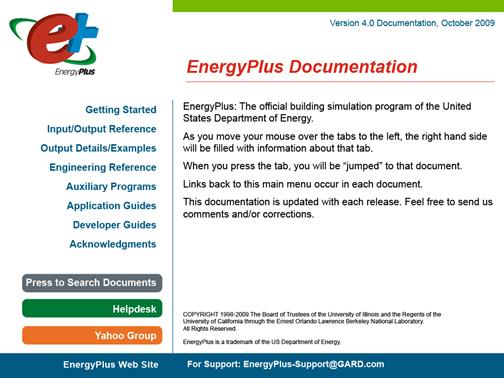

Getting Started with EnergyPlus
Basic Concepts Manual - Essential Information You Need about Running EnergyPlus (and a start at building simulation)
EnergyPlus Overview
Welcome to EnergyPlus! This section offers a big picture view of what EnergyPlus is, what it does, why it exists, and what its goals are AND provides an overview to the EnergyPlus documentation library. While this document does not provide every detail on the program, it does give the reader a macroscopic view of EnergyPlus and how it is intended to fit into the energy analysis and thermal load simulation software continuum.
What is EnergyPlus?
EnergyPlus has its roots in both the BLAST and DOE–2 programs. BLAST (Building Loads Analysis and System Thermodynamics) and DOE–2 were both developed and released in the late 1970s and early 1980s as energy and load simulation tools. Their intended audience is a design engineer or architect that wishes to size appropriate HVAC equipment, develop retrofit studies for life cycling cost analyses, optimize energy performance, etc. Born out of concerns driven by the energy crisis of the early 1970s and recognition that building energy consumption is a major component of the American energy usage statistics, the two programs attempted to solve the same problem from two slightly different perspectives. Both programs had their merits and shortcomings, their supporters and detractors, and solid user bases both nationally and internationally.
Like its parent programs, EnergyPlus is an energy analysis and thermal load simulation program. Based on a user’s description of a building from the perspective of the building’s physical make-up, associated mechanical systems, etc., EnergyPlus will calculate the heating and cooling loads necessary to maintain thermal control setpoints, conditions throughout an secondary HVAC system and coil loads, and the energy consumption of primary plant equipment as well as many other simulation details that are necessary to verify that the simulation is performing as the actual building would. Many of the simulation characteristics have been inherited from the legacy programs of BLAST and DOE–2. Below is list of some of the features of the first release of EnergyPlus. While this list is not exhaustive, it is intended to give the reader and idea of the rigor and applicability of EnergyPlus to various simulation situations.
-
Integrated, simultaneous solution where the building response and the primary and secondary systems are tightly coupled (iteration performed when necessary)
-
Sub-hourly, user-definable time steps for the interaction between the thermal zones and the environment; variable time steps for interactions between the thermal zones and the HVAC systems (automatically varied to ensure solution stability)
-
ASCII text based weather, input, and output files that include hourly or sub-hourly environmental conditions, and standard and user definable reports, respectively
-
Heat balance based solution technique for building thermal loads that allows for simultaneous calculation of radiant and convective effects at both in the interior and exterior surface during each time step
-
Transient heat conduction through building elements such as walls, roofs, floors, etc. using conduction transfer functions
-
Improved ground heat transfer modeling through links to three-dimensional finite difference ground models and simplified analytical techniques
-
Combined heat and mass transfer model that accounts for moisture adsorption/desorption either as a layer-by-layer integration into the conduction transfer functions or as an effective moisture penetration depth model (EMPD)
-
Thermal comfort models based on activity, inside dry bulb, humidity, etc.
-
Anisotropic sky model for improved calculation of diffuse solar on tilted surfaces
-
Advanced fenestration calculations including controllable window blinds, electrochromic glazings, layer-by-layer heat balances that allow proper assignment of solar energy absorbed by window panes, and a performance library for numerous commercially available windows
-
Daylighting controls including interior illuminance calculations, glare simulation and control, luminaire controls, and the effect of reduced artificial lighting on heating and cooling
-
Loop based configurable HVAC systems (conventional and radiant) that allow users to model typical systems and slightly modified systems without recompiling the program source code
-
Atmospheric pollution calculations that predict CO2, SOx, NOx, CO, particulate matter, and hydrocarbon production for both on site and remote energy conversion
-
Links to other popular simulation environments/components such as WINDOW5, WINDOW6 and DElight to allow more detailed analysis of building components
More details on each of these features can be found in the various parts of the EnergyPlus documentation library.
No program is able to handle every simulation situation. However, it is the intent of EnergyPlus to handle as many building and HVAC design options either directly or indirectly through links to other programs in order to calculate thermal loads and/or energy consumption on for a design day or an extended period of time (up to, including, and beyond a year). While the first version of the program contains mainly features that are directly linked to the thermal aspects of buildings, future versions of the program will attempt to address other issues that are important to the built environment: water, electrical systems, etc.
Although it is important to note what EnergyPlus is, it is also important to remember what it is not.
-
EnergyPlus is not a user interface. It is intended to be the simulation engine around which a third-party interface can be wrapped. Inputs and outputs are simple ASCII text that is decipherable but best left to a GUI (graphical user interface). This approach allows interface designers to do what they do best—produce quality tools specifically targeted toward individual markets and concerns. The availability of EnergyPlus frees up resources previously devoted to algorithm production and allows them to be redirected interface feature development in order to keep pace with the demands and expectations of building professionals.
-
EnergyPlus is currently not a life cycle cost analysis tool. It produces results that can then be fed into an LCC program. In general, calculations of this nature are better left to smaller “utility” programs which can respond more quickly to changes in escalation rates and changes to methodologies as prescribed by state, federal, and defense agencies.
-
EnergyPlus is not an architect or design engineer replacement. It does not check input, verify the acceptability or range of various parameters (expect for a limited number of very basic checks), or attempt to interpret the results. While many GUI programs assist the user in fine-tuning and correcting input mistakes, EnergyPlus still operates under the “garbage in, garbage out” standard. Engineers and architects will always be a vital part of the design and thermal engineering process.
Why does EnergyPlus exist and what were its original goals?
The existence of EnergyPlus is directly related to some of the increasingly obvious shortcomings of its predecessor programs—BLAST and DOE–2. Both programs, though still valid tools that will continue to have utility in various environments, have begun to show their age in a variety of ways. Both BLAST and DOE–2 were written in older version of FORTRAN and used features that will eventually be obsolete in new compilers. Both programs consisted of a significant amount of “spaghetti code” and outdated structures that made it difficult to maintain, support, and enhance. Neither BLAST nor DOE–2 is able to correctly handle feedback from the HVAC system to the zone conditions.
Finally, the speed with which new technology in the HVAC field is developed has far outpaced the ability of the support and development groups of both programs to keep the programs current and viable. This is really the key issue in the existence of EnergyPlus: there simply are not enough researchers worldwide who have enough experience with the complex code of the programs to keep pace with new technology. In addition, due to the years of experience necessary to make modifications to either BLAST or DOE–2, it is extremely expensive and time consuming to produce models or train someone to become proficient in either program’s code. The following paragraphs address how the goals of EnergyPlus have been carefully selected to solve the problems of the legacy programs and to make EnergyPlus an international repository for algorithms that can be made available to all interested parties.
Structure and Simulation Management: The “spaghetti code” nature of the parent programs resulted in great confusion as to how information flowed within the program, when data was modified or should be modified, and what was happening when. Thus, one of the goals of EnergyPlus development was to eliminate the interconnections between various program sections and the need to understand all parts of the code just to make an addition to a very limited part of the program. This goal was achieved through a program structure that implemented a “manager” philosophy. In effect, the program consists of many pieces (i.e., modules—see next paragraph) which when viewed graphically resemble an inverted tree. Instead of allowing lower level pieces of the program and calls to those sections of the code to infiltrate up to the highest level of the simulation, each branch exercises control over when its sub-branches are called. Thus, this is much like an organization chart where management over employees proceeds up a chain of command until it reaches the “CEO” of the simulation. In EnergyPlus, a subroutine called ManageSimulation serves the “CEO” role. This single subroutine controls four of the five main simulation loops (environment, day, hour, sub-hour time step; the system time step is controlled by the HVAC manager). In addition, this subroutine also sets global flags that are used by other subroutines and modules to determine the state of the simulation so that each part of the program knows whether to read input, initialize, simulate, report, etc. The manager philosophy makes the links between program modules simple and explicit. Typically, each module is accessible only through a call to its manager routine. Developers no longer have to worry about hidden and unexpected connections between and among program subroutines.
Modularity: One of the benefits of the structural improvements over the legacy programs is that the code can now be much more object-oriented and modular in nature. A result of the goal for improved structure in EnergyPlus was the definition of a well-organized, module concept that would facilitate adding features and links to other programs. It was decided that FORTRAN90 would be used for the initial release of EnergyPlus due to the fact that it:
-
is a modern, modular language with good compilers on many platforms
-
allows C-like data structures and mixed language modules
-
provides structure that begins to be object-based
-
allows long variable names (up to 32 characters)
-
provides backward compatibility with legacy code during the development process
The key benefit of modularity is that researchers can develop modules concurrently without interfering with other modules under development and with only a limited knowledge of the entire program structure. This feature is critical to promoting both widespread use and broad development of program models. EnergyPlus can only be successful if the pool of potential model developers increases significantly so that interest and economics drives what models are added to the program rather than have its extensions limited by a lack of intellectual resources. Thus, modularity and structure improvements in EnergyPlus solve the problems of not having enough experts to keep up with technology and the large start-up time and expense previously needed to bring someone up to speed on program additions.
Since the original version (2001), EnergyPlus code and structure continues to evolve and adopts the ever changing Fortran Standard.
Established Links: The modularity of EnergyPlus makes it easier for other developers to quickly add other component simulation modules. This means that it will be significantly easier to establish links to other programming elements. Since initially the EnergyPlus code will contain a significant number of existing modules, there will be many places within the HVAC code where natural links to new programming elements can be established. These are fully documented to assist other developers in a swift integration of their research into EnergyPlus. In addition to these more natural links in the HVAC section of the code, EnergyPlus will also have other more fluid links in areas such as the heat balance that will allow for interaction where the modules might be more complex or less component based. Again, the goal of this feature of EnergyPlus is maximize the number of developers who can quickly integrate their work into EnergyPlus for the minimum investment of resources. The following diagram depicts how other programs have already been linked to EnergyPlus and a big picture view of how future work can impact the program.

Figure 1. EnergyPlus -- the big picture
Integration of Loads, Systems, and Plants: One of the strong points of EnergyPlus is the integration of all aspects of the simulation—loads, systems, and plants. Based on a research version of the BLAST program called IBLAST, system and plant output is allowed to directly impact the building thermal response rather than calculating all loads first, then simulating systems and plants. The simulation is coupled allowing the designer to more accurately investigate the effect of undersizing fans and equipment and what impact that might have on the thermal comfort of occupants within the building. The diagram below shows a basic overview of the integration of these important elements of a building energy simulation.

Figure 2. EnergyPlus -- Internal elements
“Open” Source Code: Another advantage of EnergyPlus that it shares with both BLAST and DOE–2 is that the source code of the program will be available and open for public inspection, revision, etc. The program is not intended to be a black box that is unintelligible to the users and developers around the world. While there are many conflicting ideas on what is meant by “open”, EnergyPlus is certainly not closed since this would be counter to the goals that have already been stated. The hope is that this access to source code will improve the accuracy and usability of the program over the long term and allow many developers to work on the program simultaneously. This “developer friendly” stance is critical to keeping EnergyPlus current and in step with technological advances.
In summary, the goals of EnergyPlus are ambitious but achievable via the path described above. EnergyPlus aims to be a program that is relatively simple to work with from the perspective of both the users and the developer. The development team made tremendous efforts to keep simulation code and algorithms as separate as possible and as modular as possible to minimize the overall knowledge that someone would need to have to add models to the program. This will minimize the resource investment and maximize the impact of current research in the field of building energy analysis and thermal load calculations. Finally, the full coupling of building envelopes, systems, and plants will provide a better understanding of how a building responds not only to the environmental factors that impact the building but also the HVAC system as it attempts to meet the thermal loads on the building.
It is also important to note that testing and verification are key issues in the development of any new program such as EnergyPlus. While there are large sections of EnergyPlus that consist of brand new code, the majority of the heat balance code can be traced back to the original parent programs. It should be noted that while this code has been significantly reengineered the team used what has been termed an “evolutionary reengineering” (ER) process. In ER, program code is modified stepwise in an effort to restructure it, modularize it, replace old obsolete data structures, etc. The ultimate goal is to bring it up to current programming standards without starting over with new code. At each step along the way, the program is exercised over a variety of input files and parameters to insure that what were intended to be algorithm neutral changes in the program have not resulted in changes to the output. This process was very successful and bolstered confidence in the program. In addition, comparisons could be made back to legacy programs to show that the new program is at a minimum as accurate as its predecessors. Beyond this, EnergyPlus has also been subjected to a lengthy and rigorous testing plan by an outside agency as well as numerous beta testers. This level of effort and collaboration is unprecedented in the history of energy analysis and thermal load calculation programs and has resulted in a much higher level of confidence in the results produced by EnergyPlus.
EnergyPlus Documentation Library
The documentation library has four components: Menus to other documents, User Information, Engineering Reference and Developer Information. All library documents are in portable document format (PDF) form. There are several PDF readers available including the original Adobe reader (Adobe’s reader is available as a download from their web site at no charge). Below are brief descriptions of the various components of the EnergyPlus Documentation Library.
Main Documentation Menu
The main menu is not so much a document as a navigation system to the rest of the documents in the library. In Windows installations, you can actually perform complex searching on the other documents through this menu. If you press the button that says “press to search documents”, the Adobe search menu will be displayed. You then enter the word or phrase you want to search for (such as a Output:Variable name) and it will display on screen the documents that contain that word or phrase. You can then scroll through each found place and display the descriptions.

Figure 3. Example View of EnergyPlus Document Main Menu
User Information Documents
The following documents relate to using EnergyPlus, the engine. These documents cover a full range of questions and should be the first place a beginning or even experienced user would go to find out how the program works, what it expects as input, what it produces as output, etc. In general, the information in these documents is not highly technical, but it is detailed enough to use the basic capabilities of the program.
Getting Started with EnergyPlus – the Basics Manual: You are currently reading the Overview section of this document. The overview contains a “big picture” description of the EnergyPlus program as well as background of its development and the goals to which it ascribes. The remainder of the Getting Started document provides beginning users with an introduction into how to run EnergyPlus, what files are needed for EnergyPlus to execute, and what files are produced when EnergyPlus runs successfully. It also provides some guidance as to how to determine what potential sources of errors are when EnergyPlus runs into problems and how serious those problems might be.
Input and Output Reference: This document is a thorough description of the various input and output files related to EnergyPlus, the format of these files, and how the files interact and interrelate.
Output Details, Examples and Data Sets: While the Input and Output Reference document touch on some of the outputs from EnergyPlus, this document has more details and specific examples. It also addresses the reference data sets that are included.
Auxiliary Programs: This document contains information for the auxiliary programs that are part of the EnergyPlus package. For example, this document contains the user manual for the Weather Converter program, descriptions on using Ground Heat Transfer auxiliary programs with EnergyPlus, Compact HVAC descriptions, the Transition program/package and other assorted documents.
Engineering Reference Document
The Engineering Reference provides more in-depth knowledge into the theoretical basis behind the various calculations contained in the program. This reference includes more information on modeling equations, limitations, literature references, etc. The document contains the following information and is structured along the lines of the above illustration (Figure 2. EnergyPlus -- Internal elements).
Heat Balance Overview and Reference: This section describes the heat balance calculations that form the basis of the EnergyPlus building model. It includes descriptions of shadowing calculations and other pieces of the model.
HVAC Overview and Reference:This section contains a description of the loop-based approach used by EnergyPlus to model the HVAC systems: air loops, water loops, etc. It includes a description of the higher-level managers that control the simulation flow as well as some information on the various components that can be linked together to comprise an HVAC system.
HVAC Branch Based Input Description:This section is a special extension of both the input document and the HVAC overview document. It contains more detail on the various HVAC input objects and how these different object link together to form an HVAC description. It contains vital information mainly for the interface developer but also provides users with an in-depth look at the inner workings of the loop approach adopted by EnergyPlus.
Encyclopedic Reference:If the information did not fit in the above categories, then the last part of the Engineering Reference is a detailed description of the various models.
Application Menu and Application Guides
The application guides are intended to address specific applications using EnergyPlus where the other documents may not provide cohesive examples of intended usage; that is, the techniques for doing certain things may be spread throughout other documents but warrant a more “how to” approach that will be present in these documents. The application guides are intended to become more prolific over time, specifically targeted to questions users have sent to the helpdesk support site.
Current Application Guides:
EMS Application Guide: This guide contains information useful to use the advanced feature of EnergyPlus: Energy Management System tweaks. The Erl language is described and examples for use are given.
Using EnergyPlus for Compliance Guide: This guide contains information specific to using EnergyPlus in Compliance and Standard Rating systems.
External Interface(s) Application Guide: This guide contains information about external interfaces (through the Building Controls Virtual Test Bed link) to EnergyPlus.
Tips & Tricks for Using EnergyPlus: This guide contains short tips and tricks for using various parts of EnergyPlus.
Developer Menu and Developer Information Documents
The following documents will be most useful to potential developers of EnergyPlus, both Interface Developers and Module Developers. Interface Developers will be creating input and output wraps on EnergyPlus so that is it is usable to the architect, design engineers, and others. Module developers will be creating new modules within the EnergyPlus structure and framework.
Programming Standards: This document is the source of all major policies relating to the actual EnergyPlus source code. It describes rules to which all program code should adhere, notes how to structure and modularize code, and provides a listing of “approved” input and output units. As a result, it is an important document for both interface and module developers.
Interface Developer’s Guide: This document is critically important to persons interested in developing an interface that provides input to and read output from EnergyPlus. It is a comprehensive guide to the input data dictionary and the input data files that contain a user’s building data. Each piece of input syntax is described in detail. In addition, the mechanism for obtaining output and the format in which output will be produced are discussed. This document also contains sections on weather files and units. Numerous samples and examples are given throughout the document with a full file length example provided in the appendix.
Module Developer’s Guide: This document contains a wealth of information that is intended to provide as much assistance as possible to persons interested in adding modules to the EnergyPlus program. It reviews the module concept as outlined in the programming standard and how they have been implemented in EnergyPlus. It provides a description of how the various modules work together and how the program is structured from a module tree (inverted tree) perspective. One of the most important features of this document is a list of standard EnergyPlus service subroutines and modules that greatly simplify the developers’ task of integrating their work into the program. Input and output issues are also addressed from the perspective of how modules actually obtain data from the input file and how each section of the code sends data to the output files.
Getting Started with EnergyPlus
The remainder of this document is intended to give you a start on using the program with a few simple tools (EP-Launch to help run the simulation; IDFEditor to help create or look at input files) as well as some of the features (such as energy meters, simulation results) of using the program.
A developer has also created a tutorial set of pages for EnergyPlus, you may wish to visit:
Link to the tutorials section. It may be better to have two screens available so that you can go through the steps as you are reading the tutorial.
In addition, the install includes two spreadsheets:
-
Example Files Summary Spreadsheet (highlights of each example file)
-
Example Files Links to Objects (for any object, up to 3 files using that object are shown)
And for those who want to get results quickly, use the EnergyPlus Example File Generator:
The Example File Generator will take your descriptive details about a building (or you could use an EnergyPlus input file), run the simulation at the location you pick and send the results along with an input file to your email address.
The standard Windows install procedure has put the following information on your computer, in the directories/folders shown.
(You were allowed to select components, so not all of these may be there).
The main EnergyPlus folder contains Energy+.idd, EnergyPlus.exe, RunEPlus.bat, shortcut to IDFEditor, readme file(s), EP-Macro.exe, bugreprt.txt file. This will also contain the translation.exe for converting last “release” input files to the current release (see: Auxiliary Programs document for details) and the WinEPDraw program (again in the Auxiliary Programs document). If chosen, the EP-Launch program will be in this directory as well.
The general layout of folders from the install looks like:
\EnergyPlus main folder
\Documentation
the PDF files of the documentation
\DataSets
Reference Data Sets (libraries)
\MacroDataSets
Macroized Reference Data Sets (libraries)
\PreProcess
\IDFEditor Program files for the IDFEditor
\GrndTempCalc Special program to calculate ground temperatures.
\BLASTTranslator
\DOE2Translator
\WeatherConverter
\PostProcess
ReadVarsEso The simple post processor exe.
\ExampleFiles Sample input, output, results files shipped with the program.
\WeatherData Sample weather files shipped with the program.
Running EnergyPlus
Introduction
EnergyPlus is a simulation program designed for modeling buildings with all their associated heating, ventilating, and air conditioning equipment. EnergyPlus is a simulation engine: it was designed to be an element within a system of programs that would include a graphical user interface to describe the building. However, it can be run stand alone without such an interface. This document describes how to run EnergyPlus in such a stand alone fashion. This section will introduce you to the EP-Launch program, which helps you run EnergyPlus. EP-Launch looks and acts pretty much like a standard Windows™ program, so if you just want to get started with some exercises, you can skip to the section “Tutorial Example for running EnergyPlus” first and come back to this section if you run into problems with EP-Launch.
Like all simulation programs, EnergyPlus consists of more than just an executable file. EnergyPlus needs various input files that describe the building to be modeled and the environment surrounding it. The program produces several output files, which need to be described or further processed in order to make sense of the results of the simulation. Finally, even in stand-alone mode, EnergyPlus is usually not executed “by hand”, but rather by running a procedure file which takes care of finding input files and storing or further processing the output files.
To assist those in the Windows environment, we have included the EP-Launch program. Review the next section for basic instructions. More advanced techniques of executing the program are contained in the Auxiliary Programs document under “Technical Details of running EnergyPlus”, including some advanced uses of the EP-Launch program. If you wish to learn about DOS/Command Line use for EnergyPlus, you will need to read that section in the Auxiliary Programs document.
EP-Launch Program
EP-Launch is an optional component of the EnergyPlus Windows installation (it is not available for Linux and Mac platforms). For users that want a simple way of selecting files and running EnergyPlus, EP-Launch provides this and more. In addition, EP-Launch can help open a text editor for the input and output files, open a spreadsheet for the postprocessor results files, a web browser for the tabular results file, and start up a viewer for the selected drawing file.

Figure 4. EP-Launch Screen
Start EP-Launch
EP-Launch is located in the main directory/folder for EnergyPlus. In addition, it is available on the shortcut menu for EnergyPlus. By double clicking on the EP-Launch icon you get the screen shown above (Figure 4) for running a single input file. The EP-Launch program simply starts other programs and allows you to avoid having to use the DOS command line prompt to run EnergyPlus. More help is provided for the program under the “Help” menu.
Selecting Input and Weather Files
The input file and weather files can be selected on the Single Input File tab from the two pull down lists which show recently used files or you can press the "Browse…" buttons to locate an input or weather file that you have created yourself. If this is your first time using EP-Launch, the pull down lists will show some files from the ExampleFiles subdirectory. These are not the only examples, use browse to open other example files from the ExampleFiles subdirectory or other EnergyPlus input files.
Running a Single Input File
On the Single Input File tab, after you select the weather and input files simply push the "Simulate…" button to start the EnergyPlus building energy simulation engine. At this point a black DOS window should pop up on your screen and show the progress of your simulation. The simulation is complete when the black DOS box closes. The EnergyPlus program black DOS window will show scrolling text as the simulation procedure progresses. If you would like to see these messages more slowly you have two options:
1) Press the "Control-S" key combination to try to stop the progress and any key to continue.
2) Under the "View" menu on the EP-Launch program, select “Options” then “Command Window” then check "Pause During Simulation" and this will pause the process immediately after EnergyPlus executes. To continue after the pause, press any key.
If the file contains Parametric objects, the single input file may cause multiple simulations to be performed. If multiple simulations are performed, the output files will be listed on the History tab and will be named with either the file suffixes defined in the input file or with a serial number.
Multiple single input file and group simulations can be started at the same time. On a computer with multiple-processors or multiple-cores, this will enable the simulations to complete more quickly than starting one after another.
Looking at the Results
After you have run a simulation and the black DOS window closes, EnergyPlus has completed, and a status message is displayed see Figure 5:

Figure 5. EP-Launch Finish Status
This status gives you a quick overview of whether there were warning (should look at), severe (should probably fix) or fatal (must fix) errors in the run as well as the time it took for the simulation to complete. After pressing “OK” from this box, selecting “ERR/EIO/BND Output Files Only” from the “View” menu will display the ERR, EIO, and BND files – useful when errors may have occurred. Alternatively, pressing the F2 function key will display the same three files.
Another way to open files easily is by using the View Results buttons shown in Figure 6. Two different panels of buttons can be used under View Results, one shown by using the “All” tab on the left edge and by using the “Sets” tab on the left edge. The “All” tab shows all the various files by file extension that can be viewed individually. Files available for view based on the current input file name are “enabled” (extension names clearly readable). The contents of each file extension is listed below.

Figure 6. EP-Launch with the Sets tab of View Results
The figure above shows the same main screen of EP-Launch but with the “Sets” tab selected on the left edge of the View Results section. The buttons on this tab can open many files at the same time and are a shortcut to opening the files that may be commonly used. The Text Output Files, Drawing Files, and Spreadsheets buttons cause several different results files to open at once based on the currently selected Input File. The HTML file opens just the tabular results file if that file was produced (see OutputContol:Table:Style).
The contents (along with examples) are discussed in the Output Details document.
You can also view the results using one of the three buttons ("Text Output Files," "Drawing File" and "Spreadsheets") in the "View Results" area of the main EP-Launch screen.
By pressing the "Text Output Files” button, a text editor will open each of the text output files. Up to 29 files will open, if they exist. Selecting “Single File” from the ‘View “ menu displays a menu of all available output files from which any file can be opened individually. Each file may also be opened with an associated function key. The output files and function key shortcuts are listed below:
1. Variable – tabulated results in comma, tab or space delimited format (generated by the ReadVarsESO postprocessor) (F4)
2. ESO – raw report variable output (F5),
3. RDD – list of output variables available from the run (F6).
4. MDD – list of output meters available from the run (Shift-Ctrl-F3)
5. EIO – additional EnergyPlus results (F7),
6. ERR – list of errors and warnings (F8),
7. BND – HVAC system node and component connection details (F9),
8. MTR – raw report meter output (F11),
9. MTD – list of meter component variables (F12)
10. METER File – tabulated meter report in comma, tab or space delimited format (generated by the ReadVarsESO postprocessor) (Ctrl-F4)
11. ZSZ – zone sizing details in comma, tab or space delimited format (Ctrl+F5)
12. SSZ – system sizing details in comma, tab or space delimited format (Ctrl+F6)
13. AUDIT – input file echo with input processor errors and warnings (Ctrl+F8)
14. SLN – output from "report, surfaces, lines" (Ctrl+F9)
15. DBG – output from the debug command (Ctrl+F11)
16. SHD – output related to shading (Ctrl+F12)
17. SVG - HVAC Diagram (Shift+ F4)
18. EPMIDF – clean idf file after EP-Macro processing (Shift+F5)
19. EPMDET – EP-Macro detailed output with errors and warnings (Shift+F6)
20. MAP – daylighting illuminance map (Shift+F7)
21. TABLE – tabulated report of bin and monthly data in comma, tab or space delimited or HTML format (Shift+F8)
22. VMRL – drawing file in VRML (Virtual Reality Markup Language) format (Shift F+F11)
23. DXF – drawing file in AutoCAD DXF format (Shift+F12)
24. Delight IN - DElight input generated from EnergyPlus processed input (Shift+Ctrl+F4)
25. Delight OUT – Detailed DElight output (Shift+Ctrl+F5)
26. Delight ELDMP – DElight reference point illuminance per time step (Shift+Ctrl+F6)
27. Delight DFDMP – DElight warning and error messages (Shift+Ctrl+F7)
28. EXPIDF – Expanded IDF when using HVACTemplate objects (Shift+Ctrl+F8)
29. Group Error – combined error files for a group run. (Shift+Ctrl+F9)
30. VCpErr – Transition program error file (Shift+Ctrl+F11)
31. Screen (Shift+Ctrl+f12)
32. Proc CSV – Simple statistiscs generated from CSVProc (also see Create Statistics File option under View-Options).
33. EDD – Energy Management System details.
Clicking on the "Drawing File" button will open the generated DXF file if an appropriate viewer has been configured (see Selecting Viewers and Editors below). The DXF file is a CAD format that displays the physical shape of the building being modeled in three dimensions. The “Drawing File” button also opens the HVAC diagram generated with the HVAC-Diagram utility (see Auxiliary Programs).
Clicking on the "Spreadsheets" buttons will open any generated CSV files if an appropriate viewer has been configured (see Selecting Viewers and Editors below).
Viewing the Drawing File without Running a Simulation
The "Drawing" button (or the View menu Drawing File option) will automatically run EPDrawGUI if the DXF file does not exist or it is older than the input file. This allows the building geometry to be viewed without running a full simulation. For more information about EPDrawGUI, see the Auxiliary Programs document.
Editing the Input Files
The input file, called IDF file that is selected from the top pull-down list, can be edited by pressing one of two buttons in the "Input File" area. The "Edit - Text Editor" button will start a text editor and the "Edit - IDF Editor" will start the separate program called the IDF Editor. Remember to save any changes you make in either editor before returning to EP-Launch to run the simulations again.
File Menu
The File menu can be used for selecting input and weather files just like the "Browse…" buttons (see the Selecting Input and Weather Files section above).
If you are upgrading from the previous version of EnergyPlus you can use the “File”, “Transition” menu option to upgrade your EnergyPlus input files (IDF and IMF) to the most recent version (see the AuxiliaryPrograms document for more information about the Transition program). This EP-Launch option only works for upgrading input files one version.
Edit Menu
No cutting or pasting is used in this program so the edit menu shows options that duplicate the functions of the "Edit – Text Editor" and "Edit – IDF Editor" buttons. In addition, the weather file and the postprocessor command file (rvi) may be opened in the text editor.
View Menu
The View menu (Figure 7) duplicates the options in the "View Results" area of the main screen (see the Looking at the Results section above) and allows opening of selected output files. You can also open the folders that contain the active input and weather files. Opening a single file is under a submenu and is very similar to the Quick Open Panel for Single Simulation described above. Selecting “HTML File” from the “View” menu will open any user created files saved in the format: <filename>table.html (see OutputControl:Table:Style).

Figure 7. EP-Launch View Menu

Figure 8. EP-Launch Options Screen.
The “View” menu also accesses the “Options” menu item shown in Figure 8 that is used to control many of the optional features of EP-Launch. These optional features are described below:
Command Window Options
Pause During Simulation (Unless Minimized) – Stops the progress of the EnergyPlus run at different points. This does not stop the simulation itself but pauses before or after important events as files are copied or utility programs are run. It is usually used only for diagnosing problems with the EPL-RUN batch file. The feature is also described in the Running a Single Input File section above.
Minimize Single Simulation Command Window – For a single input file, minimizes the Command Window that EP-Launch uses to run EnergyPlus. The command window will appear only in the Windows taskbar and the command window will not be visible. You can restore the command window be clicking on the taskbar item labeled “EnergyPlus Process”. This option should be used with caution since you will not see any indication of the simulation being complete other than the “EnergyPlus Process” taskbar item will disappear.
Minimum Group Simulation Command Window – For a group of input files, minimizes the Command Window that EP-Launch uses to run EnergyPlus. This is a good option when working on something else on your computer at the same time as the group of simulations is running since the command window normally becomes the front window each time a new simulation starts. This option prevents the command window coming to the front for each simulation. The command window will appear only in the Windows taskbar and the command window will not be visible. You can restore the command window be clicking on the taskbar item labeled “EnergyPlus Process”. This option should be used with caution since you will not see any indication of the simulation being complete other than the “EnergyPlus Process” taskbar item will not be present.
Number of Simultaneous Processes – Select the maximum number of simulations that should be able to be run at the same time. For a computer with multiple processors or multiple cores, this will allow better utilization of the computers power. The value selected should correspond to the number of processors/cores but higher or lower number can be used as well.
Disable Multi-Threading – Check this box if you wish to disable the built in multi-threading capabilities of EnergyPlus. Portions of EnergyPlus have been programmed to use more than one processor, or CPU core, at the same time during a single simulation. This multithreading may not be desirable when running more than one simulation at a time on the same computer (because it can actually run more slowly). When this check box is checked multi-threading is turned off. The check box sets the EP_OMP_NUM_THREADS environmental variable to 1. The multi-threading capability of EnergyPlus can also be controlled using the ProgramControl object field called Number of Threads Allowed. That field takes precedence over the setting of the checkbox. Also note that when multiple simulations are started from EP-Launch, this automatically disables multithreading by setting the EP_OMP_NUM_THREADS environmental variable to 1 whether this box is checked or not. The ProgramControl object is described in the Input Output Reference document.
Interface Options
Extra Wide Window – Select this option to make the main EP-Launch window wider. This is useful when files are used with very long file path names.
Alternative layout – Changes the layout of the EP-Launch window to an alternative arrangement of buttons.
Miscellaneous Options
Tab Delimited Open with Spreadsheet – Selecting ”Single File” and then “Main Results File” from the “View” menu or pressing the F4 function key will open TAB files with the default spreadsheet application rather than the text editor. Comma-separated variable (CSV) is the default setting for viewing tabulated results set in the RVI file. If the user changes the setting for viewing tabulated results to TAB or TXT format, selecting ”Single File” and then “Main Results File” from the “View” menu or pressing the F4 function key will open the files in the default text editor. TAB files, when selected, will also be opened by the text editor when the “Text Output Files” button is pressed after a successful run.
Allow More Than 250 Columns – Tabulated data that exceeds 250 columns, the MS Excel maximum, will be truncated to that limit unless “Allow >250 Columns” is selected. Excel versions prior to 2007 were limited to 255 columns in a sheet; later versions allow unlimited number of columns. This limitation may not be true for other spreadsheet programs.
Check VERSION Prior to Simulation – Automatically check the VERSION object in the selected EnergyPlus input file prior to simulation and if it is an older version than the current version will run the Transition program to update the file.
Convert ESO/MTR to IP Units – Runs the convertESOMTR utility program (see AuxiliaryPrograms documentation for more information). This utility will convert the ESO and MTR files into Inch-Pound units. The CSV file created from these files will also be in Inch-Pound units.
Create Statistics File – Runs the CSVProc utility program (see the AuxiliaryPrograms documentation for more information) and creates the –Proc.csv file. This file contains some simple statistics on each variable in the normal CSV file.
Create Batch File to Run EnergyPlus – Traditionally EP-Launch has created a batch file in order to execute EnergyPlus with the various options chosen. This can cause problems with some operating systems, such as Windows Vista, when set to a higher security setting. This option can be unchecked and a batch file is not created when running EnergyPlus instead parameters are passed to an existing batch file.
Run ParametricPreprocessor – When this option is checked, if Parametric objects are present in the file, the ParametricPreprocessor will be run prior to the first simulation and if multiple simulations are needed they will all be executed. See the Auxiliary Programs documentation for details.
Check for Updates to EnergyPlus – When this option is checked, EP-Launch will check every seven days if an update to EnergyPlus or any of the files distributed with EnergyPlus are available to download. If they are available a message will be shown upon start up. You can also manually check by going to HELP .. CHECK FOR UPDATES.
Text Editor Options
EP-Launch will start a text editor when editing a IDF file or when viewing many of the results files. The text editor that will be used is shown but can be changed by either pressing the Select button or by pressing the Auto Find button. The Select button allows you to find the text editor of your choice. The Auto Find button will automatically find the program that is associated with the TXT file extension and use that program. Auto Find is invoked the first time EP-Launch is started so that a text editor is available immediately. The most common text editor is NOTEPAD.EXE and is built into Windows but many other text editors are also available.
Drawing Viewer Options
The default drawing viewer is the application associated with DXF files. This can be changed to your favorite drawing program by using the Select button then locating the executable file for your favorite drawing software capable of reading a DXF file. The Auto Find button will automatically find the program that is associated with the DXF file extension and use that program. A variety of programs (free of charge) can render DXF files for viewing. The Output Details document lists some of these programs as well as displaying what a DXF rendered file looks like on the screen.
VRML Viewer Options
EP-Launch will start a VRML Viewer when a building drawing is created using the Report, Surfaces, VRML option in your IDF file. The VRML Viewer that will be used is shown but can be changed by either pressing the Select button or by pressing the Auto Find button. The Select button allows you to find the VRML Viewer of your choice. The Auto Find button will automatically find the program that is associated with the WRL file extension and use that program. Auto Find is invoked the first time EP-Launch is started so that a VRML Viewer is available immediately. Many other VRML Viewers are available.
Spreadsheet Options
EP-Launch will start a spreadsheet program when viewing many of the results files. The spreadsheet that will be used is shown but can be changed by either pressing the Select button or by pressing the Auto Find button. The Select button allows you to find the spreadsheet program of your choice. The Auto Find button will automatically find the program that is associated with the CSV file extension and use that program. Auto Find is invoked the first time EP-Launch is started so that a spreadsheet program is available immediately.
Diagramming Options
EP-Launch will start a diagramming program to view SVG files from HVAC Diagram. The diagramming program that will be used is shown but can be changed by either pressing the Select button, the Auto Find button, the Use Firefox button or the Use Opera button. The Select button allows you to find the diagramming program of your choice but make sure it is capable of opening SVG files. The Auto Find button will automatically find the program that is associated with the SVG file extension and use that program. Auto Find is invoked the first time EP-Launch is started so that a spreadsheet program is available immediately. Since both Firefox and Opera web browsers can view SVG files, those buttons will select those respective browsers if available.
HTML Browser Options
EP-Launch will start a HTML browser program when viewing the tabular results file when HTML is chosen in OutputControl:Table:Style object. The HTML browser that will be used is shown but can be changed by either pressing the Select button or by pressing the Auto Find button. The Select button allows you to find the HTML browser of your choice. The Auto Find button will automatically find the program that is associated with the HTML file extension and use that program. Auto Find is invoked the first time EP-Launch is started so that a HTML browser is available immediately.
ESO Viewer Options
By default, ESO files are opened with a text editor. ESO files are the raw output file containing results from EnergyPlus for Output:Variable objects. They are often processed into CSV files to make it easier to view them. At least one utility program has been developed to view ESO files directly (see the EnergyPlus.gov web site under “Interfaces & Other Tools”, “Third-party EnergyPlus Tools). The Auto Find and Select buttons work the same way as other viewer selectors. If no special ESO viewer is selected the box will be shown as empty. It can also be emptied by using the Clear button.
PDF Viewer Options
EP-Launch will start a PDF viewer program when opening the EnergyPlus documentation under the Help menu. The PDF Viewer that will be used is shown but can be changed by either pressing the Select button or by pressing the Auto Find button. The Select button allows you to find the PDF Viewer of your choice. The Auto Find button will automatically find the program that is associated with the PDF file extension and use that program. Auto Find is invoked the first time EP-Launch is started so that a PDF Viewer is available immediately.
File Association Options
When installing EnergyPlus, you are given an option if you want IDF, IMF, and EPG files associated with EP-Launch. This allows double clicking on files with those extensions and having EP-Launch start automatically with those files. If during the install that option is not selected or if you have changed the program that opens IDF, IMF and EPG files and want to change it back to EP-Launch, the button for this option will do that.
Reset Options
Two reset options are available here.
The Auto Find All File Viewers button will autofind all the file viewers in one step. This is equivalent to pressing the Auto Find button for each viewer program.
The Reset All Options and Exit button will clear all options and restore the default values used when first invoking EP-Launch for the first time. This also clears the list of recently used IDF and weather files. This option will exit EP-Launch and you will have to start EP-Launch again.
Help Menu
The Help menu can be used to open the EnergyPlus documentation files and the EP-Launch help file. In addition, you can check for updates to the EnergyPlus program and other files in the EnergyPlus distribution.
Recently Used Files
The recently used input, weather and group file pull down lists can hold a maximum of twenty items. These lists, like the viewers selected, are saved between times you use the EP-Launch program.
Utilities Tab
The utilities tab shown in the following figure allows several utility programs that come with EnergyPlus to be used directly. More information on each utility is also available in the AuxiliaryPrograms documentation.

Figure 9. EP-Launch Utilities Tab.
For each utility, input files can be selected by using the Browse Button. The input file can be opened using a text editor and, for certain utilities, the IDF Editor. If a weather file is needed for a utility it can also be selected. For other utilities, no weather file is needed and that portion of the screen is not shown. The appropriate output files can be opened by the “Open” button near the bottom of the screen. To run the utility, use the “Run” button in the lower left corner of the screen above the “Exit” button.
In addition, for each utility, a brief description of the function of the utility is shown in the about box but much more information is available in the AuxiliaryPrograms documentation.
Caveats
Remember to save changes made in the editor before you run another simulation.
The simulation cannot write new results to open files which are locked by another application.
You will need to close the spreadsheet program that views the resulting CSV files prior to another simulation and you may need to close the text editor windows also (depending on your editor).
The EPL-RUN.BAT batch file is used to run EnergyPlus from the EP-Launch program. It can be edited with care if other postprocessors or preprocessors are to be used.
When things go wrong
Though EnergyPlus has had several releases (including beta releases prior to initial release), there still may be problems when input files meet with EnergyPlus. If you are using EP-Launch when this happens, you will see a window appear as in the figure below (Figure 10). Follow the instructions listed on the screen.

Figure 10. EnergyPlus crash within EP-Launch.
Bugs
The EP-Launch program has been through several “releases” but there is still a chance you will find bugs. Please report them to the energyplus-support@gard.com address so that we can fix them prior to the release.
If the pull-down lists ever are shown as blank the "reset" button may be used. This unlabeled button is very small in the lower left-hand corner of the main screen. It removes the items shown in the recently used file list and causes the program to forget the selected viewers and text editors; and exits the program. When you start EP-Launch again, you will need to make these selections (viewers and text editors) again.
EnergyPlus File Extensions
This section will present a list of common EnergyPlus file extensions and what they mean. This will help you after the EP-Launch program finishes.
Input Files
The following files are input to the EnergyPlus program.
IDD
The input data dictionary (IDD) is an ASCII (text) file containing a list of all possible EnergyPlus objects and a specification of the data each object requires. This file is analogous to the DOE-2 keyword file. The Guide for Interface Developers contains a full description of the input data dictionary.
idf
The input data file (IDF) is an ASCII file containing the data describing the building and HVAC system to be simulated. Many example files are installed as part of the EnergyPlus installation. Additionally, a spreadsheet file “ExampleFiles.xls” contains columnar descriptions of each file’s features.
imf
The input macro file (IMF) is an ascii file containing the data describing the building and HVAC system to be simulated and will have some contents of “macro” commands. The Auxiliary programs document describes use of the macro commands and the program that processes them – EP-Macro. Many example files are installed as part of the EnergyPlus installation.
ini
This is the EnergyPlus initialization file. It is an optional ascii input file that allows the user to specify the path for the directory containing Energy+.idd. This file, using the actual directories of the install, will be created during the install. Unless you change where the EnergyPlus.exe file resides, you will not need to change this file.
epw
The EnergyPlus weather file is an ascii file containing the hourly or sub-hourly weather data needed by the simulation program. The data format is described in detail in the Auxiliary Programs Document. It is also described succinctly in the Input Output Reference document.
Primary Output Files
The following output files are the most important for beginning users. Then, there is the section on “other output” files. And, more information about output files (complete list) is shown in the Output Details and Examples Document.
err
A text file containing the error messages issued by EnergyPlus. This is the first output that should be examined after a simulation.Error messages may be issued by EnergyPlus during its input phase or during the simulation. There are three levels of error severity: fatal, severe, and warning as well as simple “information” lines. A fatal error causes the program to terminate immediately. The following table illustrates the necessary actions.
Table 1. Error Message Levels – Required Actions
| Error Level | Action |
| Information, shown as ********* | Informative, usually a follow-on to one of the others. No action required. |
| ** ~~~ ** | This is a continuation of a previous message. String all the words/sentences together to form the complete message. |
| Warning | Take note. Fix as applicable. |
| Severe | Should Fix |
| Fatal | Program will abort, Must Fix |
csv
When run normally, EP-Launch and EnergyPlus automatically creates post-processed standard output (eso) and meter output (mtr) files into columnar csv (comma separated variable) files. These files are ready to be read by spreadsheet programs (such as Excel™).
htm/html
Several of the report options produce html files that can be read in standard Web browsers. These are very powerful, information packed files. Though wary of information overload, the easiest way to see “everything” is to enter the following in your input file:
OutputControl:Table,
HTML; !- ColumnSeparator
Output:Table:SummaryReports,
All Summary;
Note that you can also get this file in other formats (the OutputControl:Table option).
Other Output Files
audit
This is an text file which echoes the IDD and IDF files, flagging syntax errors in either file. Note that both err and audit will show most of the error messages caused by input syntax errors; however only err will show errors issued during the actual simulation. The audit can be used when you need to see the context of the error message to fully ascertain the cause. The audit file also contains potentially extra information that may be useful from the input scan.
eso
The EnergyPlus Standard Output (ESO) is a text file containing the time varying simulation output. The format of the file is discussed in the Guide for Interface Developers and the InputOutputReference. The contents of the file are controlled by Output:Variable commands in the IDF file. Although the ESO is a text file, it is not easily interpretable by a human. Usually postprocessing will be done on this file in order to put it in a format that can be read by a spreadsheet; however a quick visual inspection of the file does show whether the expected variables are output at the desired time step.
mtr
The EnergyPlus Meter Output (MTR) is a text file containing the time varying simulation output. The format of the file is similar to the ESO file. As described in a later section of this document (see Energy Meters), meters are a powerful reporting tool in EnergyPlus. Values are grouped onto logical meters and can be viewed the same way that the ESO variables are used. The contents of the file are controlled by Output:Meter commands in the IDF file. Although the MTR is a text file, it is not easily interpretable by a human. Usually postprocessing will be done on this file in order to put it in a format that can be read by a spreadsheet; however a quick visual inspection of the file does show whether the expected variables are output at the desired time step.
mtd
This file contains all the details (i.e., which report variables are on a meter and, conversely, what meters contain) about meters.
eio
The EnergyPlus Invariant Output (EIO) is a text file containing output that does not vary with time. For instance, location information (latitude, longitude, time zone, altitude) appears on this file.
rdd
mdd
The Report (variable) Data Dictionary (RDD) is a text file listing those variables available for reporting (on the ESO) for this particular simulation. Which variables are available for output depends on the actual simulation problem described in the IDF. The Report (meter) Data Dictionary (MDD) is a text file listing those variables available for reporting (on the MTR) for this particular simulation. Which meters are available for output depends on the actual simulation problem described in the IDF. A simulation with no chiller does not permit the output of any chiller report variables. The user may need to examine the RDD or MDD to find out which report variables are available in a particular simulation. The RDD and MDD are written only if the following is included in the IDF file.
Output:Reports, VariableDictionary;
A variant produces the same files in a IDF “ready” format.
Output:Reports, VariableDictionary, IDF;
dxf
This is a file in AutoCad™ DXF format showing all the surfaces defined in the IDF file. It provides a means of viewing the building geometry. The DXF file from EnergyPlus highlights different building elements (shading, walls, subsurfaces) in differing colors. A number of programs can read and display DXF files. Output of this file is triggered by
Output:Reports, Surfaces, DXF;
in the IDF.
Tutorial Example for running EnergyPlus
The following example is taken directly from the training course “Introduction to EnergyPlus”, Exercise 1. Of course, it is presented here without the benefit of classroom presentation and discussion but when followed step by step, should provide an introduction of actually using EnergyPlus.
Running EnergyPlus, Building Envelope, Internal Loads, Reports
Overview
-
Rectangular single story building
-
Windows in east and west walls
-
Single zone with no interior partitions
-
Lightweight construction

Figure 11. Schematic for Exercise 1
The details of the building construction and operation are shown in the following tables and description. For tutorial purposes, the building is located in Chicago Illinois, one of the weather files supplied with EnergyPlus. These details are listed in a fashion to make for easy entry into EnergyPlus.
Details of the exercise
Surface Constructions
| Material (listed from outside to inside) | Conductivity (W/m-K) | Thickness (m) | U (W/m2-K) | R (m2-K/W) | Density (kg/m3) | Cp (J/kg-K) |
| Walls | ||||||
| WOOD SIDING-1 | 0.140 | 0.009 | 15.556 | 0.064 | 530 | 900 |
| FIBERGLASS QUILT-1 | 0.040 | 0.066 | 0.606 | 1.650 | 12 | 840 |
| PLASTERBOARD-1 | 0.160 | 0.012 | 13.333 | 0.075 | 950 | 840 |
| Roof | ||||||
| ROOF DECK | 0.140 | 0.019 | 7.368 | 0.136 | 530 | 900 |
| FIBERGLASS QUILT-2 | 0.040 | 0.066 | 0.606 | 1.650 | 12 | 840 |
| PLASTERBOARD-2 | 0.160 | 0.010 | 1.60 | 0.625 | 950 | 840 |
| Floor | ||||||
| C5 CONCRETE | 1.73 | 0.1015 | 17.04 | 0.059 | 2243 | 837 |
Window Properties
| Type * | Clear |
| Number of panes | 2 |
| Pane thickness | 0.006 m |
| Air-gap thickness | 0.0032 m |
| Conductivity of glass | 0.9 W/m-K |
Refers to specific glass type included in the EnergyPlus datasets directory
(WindowGlassMaterials.idf)
Internal Loads
Lights: 1000W, Office Lighting schedule, surface mount fluorescent
Space Conditioning
Heating setpoint 20C, cooling setpoint 24C, no setback
Environment
Location: Chicago, Illinois, USA
Design Days: Summer
Winter
Annual Simulation Period: Jan 1 – Dec 31
Ground Temperatures: 18.2 C to 22.5 C (from Slab preprocessor, vary monthly)
Instructions
Exercise 1A. Run Pre-Defined Building with no Windows
Objective: Learn to use EP-Launch to run an EnergyPlus input file and view output files.
1) Open EP-Launch.
2) Under “Input File”, browse for input file Exercise1A.idf. This input file contains the 1-zone model described above without the windows and lights. This is located under the install folder <root>\ExampleFiles\BasicsFiles,
3) Under “Weather File”, select “No Weather File” (at the top of the pull-down list).
4) Press “Simulate”.
5) When the simulation is complete, review output files:
-
Press “Text Output Files” to see all text output. Look especially at the eio and err output files.
-
Press “Drawing Files” to see a dxf drawing of the building envelope. (If using Voloview Express, right-click to switch between wireframe and shaded orbit view. In DWG True View, use “View” -> “Visual Styles” to switch between wireframe and solid views. In both programs, use “View” à“Named Views” to select isometric views.)
-
An empty svg drawing file will also open (this will show HVAC system components in later exercises). Note that the Adobe SVG viewer is a “plug-in” for Internet Explorer (IE), so IE will open when viewing an SVG file. Depending on the security settings in IE, you may be prompted with a warning about “active” content.
-
Press “Spreadsheets” to open the numeric csv output files. In Exercise1a.csv, review the pattern of outdoor conditions and loads. (To make it easier to read the column headings, select Row 1, format cells, and turn on wrap text; then select cell B2 and select “freeze panes”.) In Exercise1aMeter.csv, review the facility district heating and cooling meters.
-
Zone/Sys Air Temperature – the zone air temperatures are already being reported.
-
Outdoor Dry Bulb – is being reported (so you can compare to outside temperature)
-
The meter for the heating in the facility - DistrictHeating:Facility – is being reported. Facility is the entire building.
-
The meter for the cooling in the facility - DistrictCooling:Facility – is being reported.
Exercise 1B. Add Windows
Objective: Learn how to add materials, constructions, and a surface using 3-D coordinates.
1) In EP-Launch, with input file Exercise1A.idf still selected, press “Edit – IDF Editor”. This will open Exercise1A.idf in the IDF Editor, a tool that assists in editing EnergyPlus input files (idf).
2) In IDF Editor, select File -> Save Options . . . and set “Saved Order” to “Original with New at Top”, and “Special Format for Some Objects” to “Yes.” Check the “Set as Default” box.
3) In IDF Editor, Select File -> Save As . . . and save this file as Exercise1B.idf.
4) Create the construction definition for the windows which are double-pane clear gas with an air space:
-
Using File -> Open Dataset, open the window glass materials dataset file, WindowGlassMaterials.idf
-
Scroll down the Class list and select “WindowMaterial:Glazing”. Hint: In IDF Editor, View -> Show Classes with Objects Only (or ctl-L) will hide all empty object types from the class list.
-
Locate the object which defines the material properties for “CLEAR 6MM”. Select this object (by clicking on the column heading).
-
Using Edit -> Copy Object (or the toolbar button, or ctl-C), copy this object.
-
Switch windows to file Exercise1B.idf and paste the window material into this file. (Verify that is had been added by going to WindowMaterial:Glazing to view the object.)
-
Open dataset file WindowGasMaterials.idf.
-
Locate “AIR 3MM”, copy it and paste it into Exercise1B.idf.
-
In Exercise1B.idf, select the “Construction” class. There are three constructions pre-defined for the walls, roof, and floor.
-
Press “New Obj” to create a new blank Construction object.
-
Name this new construction “DOUBLE PANE WINDOW”.
-
Use the pulldown list to select “CLEAR 6MM” for the outside layer, then press “Enter” or “Return” to save this entry and move to the next field.
-
Select “AIR 3MM” for Layer 2, and “CLEAR 6MM” for Layer 3.
5) Add the east window (3m wide by 2m high, centered on wall, see the drawing in Figure 11 to determine coordinates):
-
Select “FenestrationSurface:Detailed” class.
-
Add a new object named “EAST WINDOW”.
-
Set the remaining fields as listed:
-
Surface Type ................................................ = Window
-
Construction Name ............ = DOUBLE PANE WINDOW
-
Base Surface Name ............... = ZONE SURFACE EAST
-
OutsideFaceEnvironment Object ................... = <blank>
-
View Factor to Ground .......................... = autocalculate
-
Name of shading control .............................. = <blank>
-
WindowFrameAndDivider Name .................... = <blank>
-
Multiplier ................................................................ = 1
-
Number of Surface Vertex Groups ........................... = 4
-
Vertex coordinates = as determined from the drawing Figure 11. Coordinates in this input are in World Coordinates (all relative to the global origin of 0,0,0). Coordinates are specified as viewed from the outside of the surface, using the rules specified in the SurfaceGeometry object.
6) Add the west window, similar to the east window.
7) Add a new Output:Surfaces:List object, type= Details. This report produces a list of all surfaces in the eio output summarizing area, azimuth, tilt, etc.
8) Save and close the IDF file, select Exercise1B.idf in EP-Launch, run the simulation and view outputs.
-
Always review the err file for errors and warnings. Fix problems if needed and re-run.
-
Are the windows in the right place in the dxf drawing file. (Use the Drawing File button or select the DXF file from View -> Single File or from the Quick-Open panel).
-
Review the surface details report in the eio file, search for “Zone/Shading Surfaces” to find this report. (Use the Text Output button, Quick Open “eio” button, or select from the single file menu, or use F7). This report is easier to read by pasting this section into a spreadsheet and using the text to columns function with comma as a delimiter).
-
Open the csv output file and compare the heating and cooling loads with the results from Exercise1A.csv.
Exercise 1C. Add Internal Loads
Objective: Learn how to add schedules, internal loads, and report variables.
1) Save Exercise1B.idf as Exercise1C.idf.
2) Open the dataset file Schedules.idf:
-
Copy the Schedule:Compact object named “Office Lighting”, and paste it into Exercise1C.idf.
-
Copy the ScheduleTypeLimits object named “Fraction”, and paste it into Exercise1C.idf.
3) In Exercise1C.idf, add a LIGHTS object named ZONE ONE Lights, using the Office Lighting schedule, peak input is 1000W. Consult the EnergyPlus Input Output Reference section on Lights for values for the return, radiant, and visible fractions. Assume the lights are surface mounted fluorescents.
4) Save and close the IDF file, select Exercise1C.idf in EP-Launch, run the simulation and review outputs.
5) Open the rdd file (the report variable data dictionary) and find report variable names related to Lights. Add a new Output:Variable object to report the lighting electric consumption.
6) Run the simulation and review outputs.
-
Check the err file.
-
Find the lighting electric consumption in the csv output file.
7) Compare heating and cooling loads with Exercise1A and Exercise1B.
8) Add more Output:Variable objects as desired.
Exercise 1D. Annual Simulation and Predefined Reports
Objective: Learn how to run an annual simulation using a weather data file and add table reports.
1) Save Exercise1C.idf as Exercise1D.idf.
2) Edit the SimulationControl object to turn off the design day simulations by setting “Run Simulation for Sizing Periods” to No and turn on the weather file (annual) simulation by setting “Run Simulation for Weather File Run Periods” to Yes..
3) Add a RunPeriod object to run a full annual simulation, let other fields default or remain blank.
4) Add a Output:Table:SummaryReports object, and select the following reports: “Annual Building Performance Summary” (ABUPS), “Input Verification and Results Summary” (IVRS), “Climate Summary”, and “Envelope Summary”.
5) Add a OutputControl:Table:Style object, and select HTML format (ColumnSeparator).
6) Edit existing Output:Variable and Output:Meter objects and change the reporting frequency from Hourly to Monthly.
7) Save and close the IDF file, select Exercise1D.idf in EP-Launch.
8) Select Chicago TMY2 weather file (or the weather file of your choice) and run the simulation.
9) Review outputs.
-
Check the err file.
-
Look at the monthly results in the csv output.
-
Press the Table output button to view the predefined reports.
Solution: Exercise 1
Try not to look at this section until you have completed the Exercise.
List of New Objects
This is a listing of new and modified objects created in this Exercise.
WindowMaterial:Glazing,
CLEAR 6MM, !- Name
SpectralAverage, !- Optical Data Type
, !- Name of Window Glass Spectral Data Set
0.006, !- Thickness {m}
0.775, !- Solar Transmittance at Normal Incidence
0.071, !- Solar Reflectance at Normal Incidence: Front Side
0.071, !- Solar Reflectance at Normal Incidence: Back Side
0.881, !- Visible Transmittance at Normal Incidence
0.080, !- Visible Reflectance at Normal Incidence: Front Side
0.080, !- Visible Reflectance at Normal Incidence: Back Side
0.0, !- IR Transmittance at Normal Incidence
0.84, !- IR Hemispherical Emissivity: Front Side
0.84, !- IR Hemispherical Emissivity: Back Side
0.9; !- Conductivity {W/m-K}
WindowMaterial:Gas,
AIR 3MM, !- Name
Air , !- Gas Type
0.0032; !- Thickness {m}
Construction,
DOUBLE PANE WINDOW, !- Name
CLEAR 6MM, !- Outside Layer
AIR 3MM, !- Layer #2
CLEAR 6MM; !- Layer #3
FenestrationSurface:Detailed,
EAST WINDOW, !- User Supplied Surface Name
WINDOW, !- Surface Type
DOUBLE PANE WINDOW, !- Construction Name of the Surface
ZONE SURFACE EAST, !- Base Surface Name
, !- OutsideFaceEnvironment Object
autocalculate, !- View Factor to Ground
, !- Name of shading control
, !- WindowFrameAndDivider Name
1, !- Multiplier
4, !- Number of vertices
8, 1.5, 2.35, !- X,Y,Z 1 {m}
8, 1.5, 0.35, !- X,Y,Z 2 {m}
8, 4.5, 0.35, !- X,Y,Z 3 {m}
8, 4.5, 2.35; !- X,Y,Z 4 {m}
FenestrationSurface:Detailed,
WEST WINDOW, !- User Supplied Surface Name
WINDOW, !- Surface Type
DOUBLE PANE WINDOW, !- Construction Name of the Surface
ZONE SURFACE WEST, !- Base Surface Name
, !- OutsideFaceEnvironment Object
autocalculate, !- View Factor to Ground
, !- Name of shading control
, !- WindowFrameAndDivider Name
1, !- Multiplier
4, !- Number of Vertices
0, 4.5, 2.35, !- X,Y,Z 1 {m}
0, 4.5, 0.35, !- X,Y,Z 2 {m}
0, 1.5, 0.35, !- X,Y,Z 3 {m}
0, 1.5, 2.35; !- X,Y,Z 4 {m}
Output:Surfaces:List,Details;
Schedule:Compact,
Office Lighting, !- Name
Fraction, !- ScheduleType
Through: 12/31, !- Complex Field #1
For: Weekdays SummerDesignDay, !- Complex Field #2
Until: 05:00, 0.05, !- Complex Field #4
Until: 07:00, 0.1, !- Complex Field #6
Until: 08:00, 0.3, !- Complex Field #8
Until: 17:00, 0.9, !- Complex Field #10
Until: 18:00, 0.5, !- Complex Field #12
Until: 20:00, 0.3, !- Complex Field #14
Until: 22:00, 0.2, !- Complex Field #16
Until: 23:00, 0.1, !- Complex Field #18
Until: 24:00, 0.05, !- Complex Field #20
For: Saturday WinterDesignDay, !- Complex Field #21
Until: 06:00, 0.05, !- Complex Field #23
Until: 08:00, 0.1, !- Complex Field #25
Until: 12:00, 0.3, !- Complex Field #27
Until: 17:00, 0.15, !- Complex Field #29
Until: 24:00, 0.05, !- Complex Field #31
For: Sunday Holidays AllOtherDays, !- Complex Field #32
Until: 24:00, 0.05; !- Complex Field #34
ScheduleTypeLimits,
Fraction, !- ScheduleType Name
0.0, !- Lower Limit Value
1.0, !- Upper Limit Value
CONTINUOUS; !- Numeric Type
Lights,
ZONE ONE Lights, !- Name
ZONE ONE, !- Zone Name
Office Lighting, !- Schedule Name
LightingLevel, !- Design Level Calculation Method
1000, !- Lighting Level {W}
, !- Watts per Zone Floor Area {W/m2}
, !- Watts per Person {W/person}
0, !- Return Air Fraction
0.72, !- Fraction Radiant
0.18, !- Fraction Visible
1, !- Fraction Replaceable
General, !- End-Use Subcategory
No; !- Return Air Fraction Calculated from Plenum Temperature
Output:Variable,*,Lights Electric Consumption ,hourly;
RunPeriod,
1, !- Begin Month
1, !- Begin Day Of Month
12, !- End Month
31, !- End Day Of Month
UseWeatherFile, !- Day Of Week For Start Day
Yes, !- Use WeatherFile Holidays/Special Days
Yes, !- Use WeatherFile DaylightSavingPeriod
No, !- Apply Weekend Holiday Rule
Yes, !- Use WeatherFile Rain Indicators
Yes, !- Use WeatherFile Snow Indicators
1; !- Number of years of simulation
Output:Table:SummaryReports,
Annual Building Utility Performance Summary, !- ReportName1
Input Verification and Results Summary, !- ReportName2
Climate Summary, !- ReportName3
Envelope Summary; !- ReportName4
OutputControl:Table,
HTML; !- ColumnSeparator
SimulationControl,
No, !- Do the zone sizing calculation
No, !- Do the system sizing calculation
No, !- Do the plant sizing calculation
No, !- Do the design day simulations
Yes; !- Do the weather file simulation
Overall scheme/methodology for running EnergyPlus
Building Simulation
If you are already familiar with modeling buildings, particularly modeling buildings for energy consumption, you may wish to skip to “IDF Editor – Brief Introduction”. The following steps are general guidelines for using any building simulation program.
A Methodology for Using Energyplus
This section provides a step by step outline that will help you streamline creating your building models for using EnergyPlus.
Step 1: Plan Ahead
Some preliminary steps will facilitate the construction of your input file. EnergyPlus requires some information in specified, externally available formats; other information may require some lead time to obtain. The following checklist should be completed before you start to construct your input file.
-
Obtain location and design climate information for the city in which your building is located. If possible, use one of the weather files available for your weather period run.
-
Obtain sufficient building construction information to allow specification of overall building geometry and surface constructions (including exterior walls, interior walls, partitions, floors, ceilings, roofs, windows and doors).
-
Obtain sufficient building use information to allow specification of the lighting and other equipment (e.g. electric, gas, etc.) and the number of people in each area of the building.
-
Obtain sufficient building thermostatic control information to allow specification of the temperature control strategy for each area of the building.
-
Obtain sufficient HVAC operation information to allow specification and scheduling of the fan systems.
-
Obtain sufficient central plant information to allow specification and scheduling of the boilers, chillers and other plant equipment.
Step 2: "Zone" the Building
A building "surface" is the fundamental element in the building model. In the general sense, there are two types of "surfaces" in EnergyPlus. These are:
1. heat transfer surfaces and
2. heat storage surfaces
The first rule of building modeling is, "Always define a surface as a heat storage surface unless it must be defined as a heat transfer surface". Any surface, which is expected to separate spaces of significantly different temperatures, must be defined as a heat transfer surface. Thus, exterior surfaces, such as outside walls, roofs and floors, are heat transfer surfaces. Interior surfaces (partitions) are heat storage surfaces if they separate spaces maintained at the same temperature and heat transfer surfaces if they separate spaces maintained at different temperatures. A discussion of how to define heat transfer and heat storage surfaces will occur in later steps. In order to correctly "zone" the building it is necessary only to distinguish between the two.
A "zone" is a thermal, not a geometric, concept. A “zone” is an air volume at a uniform temperature plus all the heat transfer and heat storage surfaces bounding or inside of that air volume. EnergyPlus calculates the energy required to maintain each zone at a specified temperature for each hour of the day. Since EnergyPlus performs a zone heat balance, the first step in preparing a building description is to break the building into zones. The objective of this exercise is to define as few zones as possible without significantly compromising the integrity of the simulation.
Although defining building zones is somewhat of an art, a few general rules will keep the new simulation user out of trouble. Consider the following figure, which shows the floor plan of an Adult Education Center.

Figure 12. Adult Education Center
The question is, "How many thermal zones should be used to model this building?" The inexperienced building modeler may be tempted to define each room in the building as a zone, but the thermal zone is defined as a volume of air at a uniform temperature. The general rule then is to use the number of fan systems (and radiant systems) not the number of rooms to determine the number of zones in the building. The minimum number of zones in a general simulation model will usually be equal to the number of systems serving the building. The collection of heat transfer and heat storage surfaces defined within each zone will include all surfaces bounding or inside of the space conditioned by the system.
Zoning – Concept 1 - Simple
Complete estimates of the total building load (magnitude only) may be obtained with very simple models. For example the total building load calculated using a one-zone model of the Education Center (Figure 13) will NOT be significantly different from the total building load calculated using a more detailed model. The distribution of the load within the building cannot be estimated with the simplified building model, but its magnitude (such as would be used in sizing the central plant equipment) can be quickly estimated using a very simple model. For simplicity, assume there is no ground heat transfer; if you want to simulate ground heat transfer, you should use the slab and/or basement programs as described in the Auxiliary Programs document.

Figure 13. Single Zone Model of the Adult Education Center.
Zoning – Concept 2 - Detailed
A more detailed model will allow you to determine more accurately the actual distribution of loads/energy within the building. In a more detailed model of the education center, five systems were designed to serve the Adult Education Center. These systems with the thermal zones they serve are shown in the table below. The location of each zone is shown in accompanying figure.
Table 2. Zoning the Building by System Type.
| System Number | System Name | CFM | m/s | Zone Served |
| 1 | Four Pipe Fan Coil | 3900 | 19.812 | Zone 1 |
| 1 | Four Pipe Fan Coil | 2500 | 12.7 | Zone 2 |
| 2 | Single Zone Draw Through | 1400 | 7.112 | Zone 3 |
| 3 | Single Zone Draw Through | 2250 | 11.43 | Zone 5 |
| 4 | Single Zone Draw Through | 2450 | 12.446 | Zone 6 |
| 5 | Unit Heater | 185 | .9398 | Zone 4 |
| 5 | Unit Heater | 41 | .20828 | Zone 7 |

Figure 14. Thermal Zones in the Education Center
Take note of Zone 1, Zone 2, Zone 4, and Zone 7. The two important zoning concepts can be demonstrated with the zoning to reinforce the idea of a thermal zone and encourage the use of simplified models.
1. Notice that Zones 4 and 7 include two rooms that are not adjacent to one another but are served by the same system. Because the air temperature in the two spaces is maintained at the same uniform temperature, the two spaces, though separated spatially, may be defined as a single zone. For our purposes, we will define them as separate zones.
2. Notice that Zone 1 and Zone 2 are served by the same fan system and could be defined as a single zone with 7650 cfm of conditioned air supplied to the space. The space was split into two zones because the designer expected higher solar loads on the South and West sides of the wing and wanted to examine the distribution as well as the magnitude of the load in the space.
Step 3: Prepare to Construct the Building Model
Working from blueprints or sketches and following the guidelines in Step 2, the building zones were determined. It is recommended that the engineer sketch the building with its zones. Surface dimensions should be included in the sketch. Additional geometric and surface information is required before an input file describing the building can be constructed. Specifically the building model must:
1. Determine heat transfer and heat storage surfaces.
2. Define equivalent surfaces.
3. Specify surfaces and subsurfaces (windows, doors, etc.) construction and materials.
4. Compile surface and subsurface information.
By the way, the file for this example, the 1 zone model are contained in your EnergyPlus installation ExampleFiles\BasicFiles folder.
Step3.1. Determine heat transfer and heat storage surfaces.
The surfaces of the building can be described in any order; grouping surfaces by zone may help you read the input file. Specifics of the describing surfaces help categorize the surface’s heat transfer/storage as well as identify the surface construction information.
The details of inputting surfaces are described in the Input/Output Reference document. The allowable surface types are shown in the following table:
Table 3. Surface types and categorization
| Surface Type | Applicability |
| BuildingSurface:Detailed | Wall, Roof, Ceiling, Floor |
| FenestrationSurface:Detailed | Window, Door, Glassdoor |
| InternalMass | Areas internal to a zone |
| Shading:Site:Detailed | Shading devices external to the building face (other buildings, trees, etc.) |
| Shading:Zone:Detailed | Shading devices attached to the building (overhang, fin) |
The pieces of the definition that designate BuildingSurface:Detailed surfaces as either heat transfer or heat storage surfaces are:
A5 , \field Outside Boundary Condition
\required-field
\type choice
\key Surface
\key Zone
\key Outdoors
\key Ground
\key OtherSideCoefficients
\key OtherSideConditionsModel
A6, \field Outside Boundary Condition Object
\type object-list
\object-list OutFaceEnvNames
\note Non-blank only if the field Outside Boundary Condition is Surface, Zone, OtherSideCoefficients,
\note or OtherSideConditionsModel
\note If Surface, specify name of corresponding surface in adjacent zone or
\note specify current surface name for internal partition separating like zones
\note If Zone, specify the name of the corresponding zone and
\note the program will generate the corresponding interzone surface
\note If OtherSideCoefficients, specify name of SurfaceProperty:OtherSideCoefficients
\note If OtherSideConditionsModel, specify name of SurfaceProperty:OtherSideConditionsModel
A7 , \field Sun Exposure
\required-field
\type choice
\key SunExposed
\key NoSun
\default SunExposed
A8, \field Wind Exposure
\required-field
\type choice
\key WindExposed
\key NoWind
\default WindExposed
Note that subsurfaces (windows, doors) on these base surfaces will inherit the base surface properties listed above. The following examples will use a bit more of the Surface definition to give context.
Surfaces that specify “themselves” as the outside boundary condition are ceilings, floors and partitions that divide temperature-controlled spaces. The program assumes that the surface temperatures on both sides of the surface are the same. This means that even though heat may be stored in a partition, ceiling, or floor, no heat flows through it.
Heat Storage Surfaces (Use current Surface name for ExteriorEnvironment), e.g.:
BuildingSurface:Detailed,Zn005:Wall006, !- Base Surface Name
Wall,INTERIOR, !- Class and Construction Name
MAINE WING, !- Zone
Surface, Zn005:Wall006, !- Exterior Conditions and Target
NoSun, !- Solar Exposure
NoWind, !- Wind Exposure
0.5000000 , !- VF to Ground
4, !-Rectangle
57.90000 , 57.79000 , 10.00000 ,
57.90000 , 57.79000 , 0.0000000E+00,
57.90000 , 47.79000 , 0.0000000E+00,
57.90000 , 47.79000 , 10.00000 ;
Some surfaces divide the temperature controlled space from the outside environment. Surfaces that are both sun and wind exposed (e.g. exterior walls, exposed floors, roofs) feel the full effect of both solar radiation and outside temperature, and the outside air film resistance for these surfaces changes with wind speed and wind direction. Surfaces that are not sun or wind exposed (a wall to an “uncontrolled” space) are not affected by solar radiation, wind speed or direction and have a constant outside convective air film resistance.
Heat Transfer Surfaces Exposed to the Outside Environment, such as Exterior Walls, Roofs, Exposed Floors:
BuildingSurface:Detailed,Zn005:Wall002, !- Base Surface Name
Wall,EXTERIOR, !- Class and Construction Name
MAINE WING, !- Zone
Outdoors,, !- Exterior Conditions and Target (if applicable)
SunExposed, !- Solar Exposure
WindExposed, !- Wind Exposure
0.5000000 , !- VF to Ground
4, !-Rectangle
77.90000 , 47.79000 , 10.00000 ,
77.90000 , 47.79000 , 0.0000000E+00,
77.90000 , 67.79000 , 0.0000000E+00,
77.90000 , 67.79000 , 10.00000 ;
Surfaces such as basement walls and slab floors separate the space from the earth surrounding the surfaces. Therefore, the outside surface temperatures become the ground temperatures.
Heat Transfer Surfaces in Contact with the Ground, such as Basement Walls or Slab Floors:
BuildingSurface:Detailed,Zn004:Flr001, !- Base Surface Name
Floor,SLAB FLOOR, !- Class and Construction Name
ARIZONA WING, !- Zone
Ground,, !- Exterior Conditions and Target (if applicable)
NoSun, !- Solar Exposure
NoWind, !- Wind Exposure
1.000000 , !- VF to Ground
4, !-Rectangle
38.01000 , 8.510000 , 0.0000000E+00,
18.01000 , 8.510000 , 0.0000000E+00,
18.01000 , 28.51000 , 0.0000000E+00,
38.01000 , 28.51000 , 0.0000000E+00;
Other surfaces separate zones that may be at different temperatures. These surface types allow heat transfer (by conduction through the walls) from a zone at a higher temperature to a zone at a lower temperature. The location of the heat storage surface in the zone is not important except in specialized solar studies. The surface above (wall to uncontrolled space) would be more correctly modeled as an interzone surface.
Heat Transfer Surfaces Exposed to Another Zone, such as Interzone walls, ceilings or floors:
BuildingSurface:Detailed,Zn005:Wall005, !- Base Surface Name
Wall,INTERIOR, !- Class and Construction Name
MAINE WING, !- Zone
Surface,Zn001:Wall009, !- Exterior Conditions and Target
NoSun, !- Solar Exposure
NoWind, !- Wind Exposure
0.5000000 , !- VF to Ground
4, !-Rectangle
57.90000 , 47.79000 , 10.00000 ,
57.90000 , 47.79000 , 0.0000000E+00,
67.90000 , 47.79000 , 0.0000000E+00,
67.90000 , 47.79000 , 10.00000 ;
Step 3.2. Define equivalent surfaces as desired.
When the building was zoned, our objective was to define as few zones as possible. Now we would like to extend this objective to include defining as few surfaces as possible without significantly compromising the integrity of the simulation. We reduce the number and complexity of surfaces in our input file by defining equivalent surfaces.
Before dealing with equivalent surfaces, it is appropriate to take the concept of a thermal zone one step further. EnergyPlus performs heat balances on individual zone surfaces and on the zone air. For purposes of the heat transfer calculations, a geometrically correct rendering of the zone surfaces is not required. The surfaces do not even have to be connected. As long as the program knows to which thermal zone (mass of air) each surface transfers heat, it will calculate all heat balances correctly. For example, all heat storage surfaces of the same construction within a zone may be defined as a single rectangular surface. The size of this equivalent surface will equal the sum of all the areas of all the heat storage surfaces in the zone. A few simple rules will further explain what we mean by equivalent surfaces and how these surfaces may be used. Remember that these are guidelines for optional simplification of input. Each simplification must be evaluated to determine if it would significantly impact certain shading, interior solar gains, or daylighting features. The goal is to seek an adequate level of detail to capture the key features of the building envelope without spending excess time describing and computing results for details that are insignificant.
1. Define all roofs and floors as rectangles regardless of the shape of the zone. Each zone may have one rectangular roof and one rectangular floor of a given construction.
2. Define all heat storage surfaces of the same construction within a zone as a single surface. The size of the single surface is obtained by summing the individual surface areas exposed to the zone. Thus, if a partition is completely within a zone (both sides of the partition are exposed to the zone), the area of each side must be added to the area of the equivalent surface. On the other hand, if the partition separates two zones, the area of only one side should be added to the equivalent surface.
3. Combine all windows on a given exterior surface into a single window. Usually each exterior surface should have only one window of each type. Overhangs or other shading devices may require that more windows be specified or combined together. By using the WindowMaterial:Glazing construction for your glass door, they will be correctly modeled in EnergyPlus with sunlight transferring into the zone.
The following figure shows the surfaces and subsurfaces required for a one-zone model, i.e., the education center. Since there were two types of partitions in the building, two heat storage surfaces ("internal mass") of different constructions were defined.

Figure 15. Simplifications Using Equivalent Surfaces
Step3.3. Specify construction elements
BLAST, DOE-2 and other programs often have “libraries” of constructions, schedules, and other aspects of simulating the building. In EnergyPlus, we have a special set of files in the DataSets folder that represent many facets of building simulation. Data sets are usually IDF snippets or macro files. For constructions, using the guidelines in the ASHRAE Handbook of Fundamentals (2005), the file ASHRAE_2005_HOF_Materials.idf contains materials and constructions from Chapters 30 and 25. Since Chapter 30 discusses heating and cooling loads, it includes constructions for light, medium and heavy weight buildings – these constructions are represented in the dataset file. For the education center, “medium” constructions are used. For the windows, we will use the Double Pane Window from the previous exercise.
| Type (1) | Name (2) | Material (3) |
| Wall | Medium Exterior Wall | M01 100mm brick |
| I02 50mm insulation board | ||
| F04 Wall air space resistance | ||
| G01a 19mm gypsum board | ||
| Window | Double Pane Window | Clear 6MM |
| Air 3MM | ||
| Clear 6MM | ||
| Partition | Medium/Heavy Partitions | G01a 19mm gypsum board |
| M01 100mm brick | ||
| M05 200mm concrete block | ||
| G01a 19mm gypsum board | ||
| Partition | Medium Partitions | G01a 19mm gypsum board |
| F04 Wall air space resistance | ||
| G01a 19mm gypsum board | ||
| Wall | Heavy/Medium Partitions | G01a 19mm gypsum board |
| M05 200mm concrete block | ||
| M01 100mm brick | ||
| G01a 19mm gypsum board | ||
| Roof | Medium Roof/Ceiling | M14a 100mm heavyweight concrete |
| F05 Ceiling air space resistance | ||
| F16 Acoustic tile | ||
| Floor | Medium Floor | F16 Acoustic tile |
| F05 Ceiling air space resistance | ||
| M14a 100mm heavyweight concrete |
Table 4. Building Elements
Notes:
(1) The surface type is a wall, floor, roof, window or door.
(2) User supplies name for the element. For this example use name from the DataSet: ASHRAE_2005_HOF_Materials.idf. Similarly, the window was constructed from the Windows.idf dataset.
(3) Material's full name is as found in the ASHRAE_2005_HOF_Materials.idf dataset.
Step 3.4. Compile surface and subsurface information.
Building information:
Building North Axis: This syntax simplifies building geometry specification by designating one wall of the building as the building’s north pointing axis. The building model North axis is measured from true (compass) North. Surface facing angles (see surface information below) are then specified relative to the building north axis. The North Axis entry in the Input Output Reference (duplicated here) illustrates specification of the building north axis.

Figure 16. Illustration of Building North Axis
Zone information:
- Wall height: In a simple model, one should make all the walls the same height. Then, the simple, 1 zone model can entirely enclose the space. In more complex models, you may resize each wall accordingly.
Surface information:
1. Base Surface Type: Heat Transfer/Heat Storage Surfaces may be of the following types: wall, floor, roof, internal mass, or subsurface
2. Construction: The type of construction of the surface (see previous table).
Subsurface information:
1. Subsurfaces are Windows, Doors or GlassDoors
2. Area: Area of the subsurface.
3. Reveal: For windows only, the distance it is inset from the outside surface of a wall. For simplicity, put all the windows in the same physical plane as the wall they are on.
For the single zone model, the following figure is a schematic representation of a one zone representation. The figure shows the length of all "base" surfaces and the areas of all "subsurfaces" (windows). Doors are shown and may be entered, if desired. In the table (Table 5), the surfaces are numbered counter-clockwise around the zone beginning at the lower left corner of the figure. This table is the minimum required zone information compiled by the user. A few simple conventions should be followed to facilitate the construction of zone information tables:
1. Number all surfaces in order counter-clockwise around the zone.
2. Keep the subsurfaces with the base surface on which they are located.
3. Specify lengths for base surfaces and areas for subsurfaces and internal mass.
4. Specify the roof and floor as rectangles of the correct size.

Figure 17. Schematic of One Zone Model with Exterior Wall length and Window Areas.
Full Building – 1 Zone model
| Surface | type | construction | Length {m} | Area {m2} |
| 1 | exterior wall | Medium Exterior Wall | 15.25 | |
| 2 | window | Double Pane Window | 5.62 | |
| 3 | exterior wall | Medium Exterior Wall | 4.9 | |
| 4 | window | Double Pane Window | 3.9 | |
| 5 | exterior wall | Medium Exterior Wall | 34.44 | |
| 6 | window | Double Pane Window | 33.7 | |
| 7 | exterior wall | Medium Exterior Wall | 13.2 | |
| 8 | window | Double Pane Window | 9.44 | |
| 9 | exterior wall | Medium Exterior Wall | 10.4 | |
| 10 | window | Double Pane Window | 7.58 | |
| 11 | exterior wall | Medium Exterior Wall | 20 | |
| 12 | window | Double Pane Window | 10.5 | |
| 13 | exterior wall | Medium Exterior Wall | 12 | |
| 14 | window | Double Pane Window | 7.58 | |
| 15 | exterior wall | Medium Exterior Wall | 20 | |
| 16 | window | Double Pane Window | 17.66 | |
| 17 | exterior wall | Medium Exterior Wall | 6.1 | |
| 18 | window | Double Pane Window | 4.7 | |
| 19 | exterior wall | Medium Exterior Wall | 3.1 | |
| 20 | exterior wall | Medium Exterior Wall | 6.1 | |
| 21 | window | Double Pane Window | 3.71 | |
| 22 | exterior wall | Medium Exterior Wall | 23 | |
| 23 | window | Double Pane Window | 19.39 | |
| 24 | exterior wall | Medium Exterior Wall | 15.24 | |
| 25 | window | Double Pane Window | 7.8 | |
| 26 | exterior wall | Medium Exterior Wall | 38 | |
| 27 | window | Double Pane Window | 31 | |
| 28 | roof | Medium Roof/Ceiling | Equivalent area (square) | 1250.1 |
| 29 | floor | Medium Floor | Equivalent area (square) | 1250.1 |
| 30 | internal mass | Medium Partitions | 956.9 | |
| 31 | internal mass | Medium/Heavy Partitions | 1757.7 |
Table 5. Compilation of Surface Information for the One Zone Model
The column headings in the previous table have the following meanings:
Type: A shortened notation for the surface type in EnergyPlus to differentiate between heat storage surfaces and various types of heat transfer surfaces.
Construction: A name for the surface construction types.
Length: The length of base surfaces (i.e. Exterior Walls).
Area: The area of subsurfaces (windows), roofs, floors.
Step 4: Compile Internal Space Gain Data
People, lights, equipment, outside air infiltration and ventilation all constitute "internal gains" for the thermal zone. These gains are described to EnergyPlus as a design or peak level with a schedule that specifies a fraction of the peak for each hour. The peak level is calculated by the user. Table 6. Internal Gain Data shows the internal loads for a single zone model of Ft. Monmouth and the schedule named to specify the hourly load.
Table 6. Internal Gain Data
| Zone | Gain Type | Size | Schedule |
| 1 | People | 205 | Office occupancy |
| Lights | 26360 W | Office lighting | |
| ZoneInfiltration | .75 m3/sec | Constant |
The column headings in the table have the following meanings:
Gain Type: The code used to differentiate between various types of internal gains.
Size: The peak load. This is the actual size of the load for every hour that the schedule specifies "100%".
Schedule: The hourly schedule that specifies the percentage of peak load for each hour of the day.
HVAC: Using the Compact HVAC models, purchased air can be used to calculate the energy needs of the building.
As the following figure shows, the equivalent area floor/roof does not fit in the building perimeter. As an exercise, you might reconfigure both floor and roof to be a polygonal shape and compare results.

Figure 18. Full Building - Adult Education Center
As an adjunct to the previous schematic layout for the one zone approach, the following figure shows the same building but with IP units:

Figure 19, Schematic for One Zone Building - IP Units
Tutorial Exercise 2
The following example is taken directly from the training course “Introduction to EnergyPlus”, Exercise 2. Of course, it is presented here without the benefit of classroom presentation and discussion but when followed step by step, should provide an introduction of actually using EnergyPlus.
Unitary System and VAV using HVACTemplate Inputs
Overview
-
Rectangular single story building with 5 occupied zones and a ceiling plenum
-
Packaged DX cooling with gas heat serving one zone
-
VAV with reheat and return plenum serving the other 4 zones
-
All equipment autosized using summer and winter design days

Figure 20. Schematic for Exercise 2.
Details of the Exercise
Building Description
-
Single floor rectangular building 30.5 m (100 ft) by 15.2 m (50 ft) by 3m (10 ft) high.
-
Building is oriented with the long axis running east-west.
-
Floor Area 463.6 m2 (5000 ft2).
-
5 occupied zones - 4 exterior, 1 interior, zone height 2.4 m (8 ft). Exterior zone depth is 3.7 m (12 ft).
-
1 plenum zone 0.6 m (2 ft) high.
-
Windows on all 4 facades
-
South and north facades have glass doors.
-
South facing glass is shaded by overhangs.
-
Walls are wood shingle over plywood, insulation, and gypsum board.
-
Roof is gravel built up roof with mineral board insulation and plywood sheathing.
-
Floor slab is 0.1 m (4 in) heavy concrete.
-
Windows and glass doors are double pane Low-e clear glass with argon gap.
-
Window to wall ratio is approximately 0.3.
-
Lighting is 16 W/m2 (1.5 W/ft2).
-
Office electric equipment is 10.8 W/m2 (1.0 W/ft2).
-
1 occupant per 9.3 m2 (100 ft2) of floor area.
-
Infiltration is 0.25 air changes per hour (always on, proportional to wind speed).
-
* Refers to specific glass type included in the EnergyPlus datasets directory
-
(WindowGlassMaterials.idf)
Space Conditioning
Heating setpoints: 21.1C (70F) occupied, 12.8C (55F) unoccupied
Cooling setpoints: 23.9C (75F) occupied, 40.0C (104F, system off) unoccupied
Plenum zone not controlled
Environment
Location: Chicago, Illinois, USA
Design Days: Summer
Winter
Annual Simulation Period: Jan 1 – Dec 31
Ground Temperatures: from Slab preprocessor (20.4 to 23.0 C)
Instructions
Exercise 2A. Add Unitary System with DX Cooling and Gas Heating (Furnace) Serving a Single Zone
Objective: Learn how to describe a thermostat and unitary equipment using HVACTemplate objects.
1) Open Exercise2.idf and save it as Exercise2A.idf. (Exercise2.idf contains the building envelope, internal loads, and some extra schedules to support the HVAC system descriptions which will be added in this Exercise.)
2) Add a HVACTemplate:Thermostat object to define the thermostat setpoints for this simulation.
-
Choose a name for the thermostat. This name will be referenced in the next step.
-
For heating setpoints, use pre-defined schedule named "Office Heating Setpoints".
-
For cooling setpoints, use pre-defined schedule named "Office Cooling Setpoints".
3) Add a HVACTemplate:Zone:Unitary object serving the "NORTH PERIMETER" zone. Choose a name for the air handling system which will be added in Step 4. Use the thermostat name from step 2 for the thermostat field. Retain the defaults for the remaining fields.
4) Add a HVACTemplate:System:Unitary object. The name of this system object must be the same name used in the zone object for "Air Handling System Name" field (See Step 3). Retain the defaults for all fields except the following:
-
Availability Schedule = Office HVAC (predefined)
-
Control Zone Name or Thermostat Location = NORTH PERIMETER
-
Supply Fan Operating Mode Schedule Name = Continuous
-
Heating Coil Type = Gas
-
Minimum Outdoor Air Schedule Name = Office Minimum OA (predefined)
5) Add a Sizing:Parameters object and set the sizing factor to 1.2 (for 20% oversizing).
6) Edit the SimulationControl object and set the Zone and System sizing flags to "Yes".
7) Run the simulation and review output files, especially:
-
err, there will be some warnings about meters that do no exist and the ABUPS report not being a full year. These will go away as more features are added and an annual run is simulated.
-
DXF , drawing of building surfaces. (Try selecting the Southwest Isometric named view, then see how each zone is a separate drawing layer. In Voloview open the View -> Layers dialog. Click on the light bulbs to toggle display of each zone. In TrueView click on the Layer Properties Manager toolbar button. To toggle display of a layer, single-click a layer light bulb, then click apply.)
-
SVG, block diagram of the HVAC system components. (HINT: right-click in the drawing and read the Help to learn how to navigate in the SVG viewer.)
-
Main Results File (csv) and Meter File (Meter.csv).
-
eio, zone and system sizing results
-
Add output variables to report operation of the system (furnace) fan, heating coil, and cooling coil. Reference the RDD output file for variable names.
8) Re-run the simulation and review results again.
- Note during hour 7 of the summer design day that "NORTH PERIMETER:Zone/Sys Sensible Heating RateW" is nonzero, but the heating coil is off and the DX cooling coil shows a load. Why? This report variable reports the impact of the system on the zone (not the zone's demand for heating or cooling), averaged over the hour. The system fan is scheduled on at 6 a.m., but the outside air dampers are closed. The zone is not warm enough from the night to require cooling, so the circulating fan heat warms the zone slightly for a portion of the hour until the zone temperature exceeds the cooling setpoint and the DX coil comes on for the remainder of the hour. If the economizer were active, this would not occur.
Exercise 2B. Add VAV System with Reheat Serving Four Zones with Chiller and Boiler Plant
Objective: Learn how to describe a VAV system with central plant using HVACTemplate objects.
1) Save Exercise2A.idf as Exercise2B.idf.
2) Add a HVACTemplate:System:VAV object. Retain the defaults for all fields except the following:
-
Air Handling System Name = <assign a name>
-
System Availability Schedule = Office HVAC (predefined)
-
Cooling Coil Design Setpoint= 13C (55.4F)
-
Minimum Outdoor Air Schedule Name = Office Minimum OA (predefined)
-
Economizer Type = FixedDryBulb
-
Return Plenum Name = PLENUM
3) Add four HVACTemplate:Zone:VAV objects serving the four remaining zones (South Perimeter, East Perimeter, West Perimeter, and Core). Retain the defaults for all fields except the following:
-
Specify the same air handler name added in Step 2 (use the dropdown list)
-
Specify the same thermostat control added in Exercise 2A Step 2 (again, use the dropdown list).
-
Supply Air Minimum Flow Fraction = 0.2
-
Reheat Coil Type = Hot Water
-
Heating Damper Action = Reverse
-
HINT: Define one HVACTemplate:Zone:VAV object, make the above changes to defaults, then press "Dup Obj" three times to duplicate the object, then edit the remaining three zone names.
4) Add a HVACTemplate:Plant:ChilledWaterLoop object and assign a name. Retain the defaults for all fields except the following:
- Condenser Water Temperature Control Type = Specified Setpoint
5) Add a HVACTemplate:Plant:Chiller object, type Electric Reciprocating Chiller with a nominal COP of 3.6, water cooled.
6) Add a HVACTemplate:Plant:Tower object, type Two Speed.
7) Add a HVACTemplate:Plant:HotWaterLoop object and assign a name. Retain the defaults for all fields.
8) Add a natural gas fired hot water boiler using HVACTemplate:Plant:Boiler.
9) Run the simulation, add desired report variables, and re-run the simulation. Review results and compare with results from Exercise 2A:
-
Note how the heating and cooling rates for the NORTH PERIMETER zone are smaller than before. Why?
-
Review the SVG drawing to see the components of the VAV system and water loops.
-
Browse the expidf file in a text editor (or open in IDF Editor from File, Open, setting file type to expidf) to see the full detailed description of the HVAC systems using native EnergyPlus objects (the expanded result of the HVACTemplate preprocessor).
Exercise 2C. Annual Simulation
Objective: Learn how to schedule report variables and create a monthly table report.
1) Save Exercise2B.idf as Exercise2C.idf.
2) Edit the SimulationControl object to turn off the design day simulations by setting “Run Simulation for Sizing Periods” to No and turn on the weather file (annual) simulation by setting “Run Simulation for Weather File Run Periods” to Yes..
3) Edit existing Output:Variable and Output:Meter objects and change the reporting frequency from Hourly to Monthly.
4) Locate the Output:Variable object for "Zone/Sys Air Temp" and duplicate it. Edit the new object and add a schedule "Office Occupancy 2". This object will report zone temperatures averaged only during occupied periods (when “Office Occupancy 2” is greater than zero). The original instance of this report variable will average the zone temperatures over all hours.
5) Add a new Output:Table:Monthly object:
-
Name = Zone Temperature Report
-
Open the rdd output file for Exercise2B in the text editor and find the following report variable names to copy and paste into the fields of the Report:Table:Monthly object in IDF Editor. Variable name and aggregation type are listed in pairs.
-
Zone Mean Air Temperature, SumOrAverage
-
Zone Mean Air Temperature, Maximum
-
Zone Mean Air Temperature, Minimum
-
Zone People Number of Occupants, HoursPositive
-
Zone Mean Air Temperature, SumOrAverageDuringHoursShown
-
Zone Mean Air Temperature, MaximumDuringHoursShown
-
Zone Mean Air Temperature, MinimumDuringHoursShown
6) Edit Output:Table:SummaryReports to add the “Equipment Summary” report.
7) Select Chicago TMY2 weather file and run the simulation.
8) Review outputs. (Note the ABUPS report in the HTML file will now show a full year of results.) Especially review the Zone Temperatures table report in the HTML file. There will be a warning regarding Output:Table:Monthly, because there are no people in the PLENUM zone; this is normal.
Solution: Exercise 2
This is a listing of new objects added in this Exercise.
Try not to look at this section until you have completed the Exercise.
Solution: Exercise 2A
HVACTemplate:Thermostat,
Office Thermostat, !- Thermostat Name
Office Heating Setpoints,!- Thermostat Heating Setpoint Schedule
, !- Thermostat Constant Heating Setpoint {C}
Office Cooling Setpoints,!- Thermostat Cooling Setpoint Schedule
; !- Thermostat Constant Cooling Setpoint {C}
HVACTemplate:Zone:Unitary,
NORTH PERIMETER, !- Zone Name
North Zone Unitary, !- Air Handling System Name
Office Thermostat, !- Thermostat Name
autosize, !- Zone Supply Air Max Flow Rate {m3/s}
, !- Zone Supply Air Sizing Factor
Flow/Person, !- Zone Outside Air Method
0.00944, !- Zone Outside Air Flow Rate per Person {m3/s}
0.0, !- Zone Outside Air Flow per Zone Area {m3/s-m2}
0.0, !- Zone Outside Air Flow per Zone {m3/s}
, !- Zone Supply Plenum Name
, !- Zone Return Plenum Name
None, !- Baseboard Heating Type
, !- Baseboard Heating Availability Schedule
autosize; !- Baseboard Heating Capacity {W}
HVACTemplate:System:Unitary,
North Zone Unitary, !- Air Handling System Name
Office HVAC, !- System Availability Schedule
NORTH PERIMETER, !- Control Zone Name or Thermostat Location
autosize, !- Supply Fan Max Flow Rate {m3/s}
Continuous, !- Supply Fan Operating Mode Schedule Name
0.7, !- Supply Fan Total Efficiency
600, !- Supply Fan Delta Pressure {Pa}
0.9, !- Supply Fan Motor Efficiency
1, !- Supply Fan Motor in Air Stream Fraction
Single-speed DX, !- Cooling Coil Type
, !- Cooling Coil Availability Schedule
autosize, !- Cooling Coil Capacity {W}
autosize, !- Cooling Coil Rated SHR
3, !- Cooling Coil Rated COP
Gas, !- Heating Coil Type
, !- Heating Coil Availability Schedule
autosize, !- Heating Coil Capacity {W}
0.8, !- Gas Heating Coil Efficiency
, !- Gas Heating Coil Parasitic Electric Load {W}
autosize, !- Maximum Outside Air Flow Rate {m3/s}
autosize, !- Minimum Outside Air Flow Rate {m3/s}
Office Minimum OA, !- Minimum Outside Air Schedule Name
NoEconomizer, !- Economizer Type
NoLockout, !- Economizer Lockout
, !- Economizer Upper Temperature Limit {C}
, !- Economizer Lower Temperature Limit {C}
, !- Economizer Upper Enthalpy Limit {J/kg}
, !- Supply Plenum Name
, !- Return Plenum Name
BlowThrough, !- Supply Fan Placement
StayOff, !- Night Cycle Control
, !- Night Cycle Control Zone Name
None, !- Heat Recovery Type
0.7, !- Sensible Heat Recovery Effectiveness
0.65, !- Latent Heat Recovery Effectiveness
, !- Dehumidification Control Type
, !- Dehumidification Control Zone Name
, !- Dehumidification Setpoint {percent}
, !- Humidifier Type
, !- Humidifier Availability Schedule
, !- Humidifier Rated Capacity {m3/s}
, !- Humidifier Rated Electric Power {W}
, !- Humidifier Control Zone Name
; !- Humidifier Setpoint {percent}
Sizing:Parameters,
1.2; !- sizing factor
Output:Variable,*,Furnace Fan Part-Load Ratio,hourly;
Output:Variable,*,DX Cooling Coil Runtime Fraction,hourly;
Output:Variable,*,Heating Coil Runtime Fraction,hourly;
Solution: Exercise 2B
HVACTemplate:System:VAV,
VAV with Reheat, !- Air Handling System Name
Office HVAC, !- System Availability Schedule
autosize, !- Supply Fan Max Flow Rate {m3/s}
autosize, !- Supply Fan Min Flow Rate {m3/s}
0.7, !- Supply Fan Total Efficiency
1000, !- Supply Fan Delta Pressure {Pa}
0.9, !- Supply Fan Motor Efficiency
1, !- Supply Fan Motor in Air Stream Fraction
ChilledWater, !- Cooling Coil Type
, !- Cooling Coil Availability Schedule
, !- Cooling Coil Setpoint Schedule
13, !- Cooling Coil Design Setpoint {C}
None, !- Heating Coil Type
, !- Heating Coil Availability Schedule
, !- Heating Coil Setpoint Schedule
10.0, !- Heating Coil Design Setpoint {C}
0.8, !- Gas Heating Coil Efficiency
, !- Gas Heating Coil Parasitic Electric Load {W}
None, !- Preheat Coil Type
, !- Preheat Coil Availability Schedule
, !- Preheat Coil Setpoint Schedule
7.2, !- Preheat Coil Design Setpoint {C}
0.8, !- Gas Preheat Coil Efficiency
, !- Gas Preheat Coil Parasitic Electric Load {W}
autosize, !- Maximum Outside Air Flow Rate {m3/s}
autosize, !- Minimum Outside Air Flow Rate {m3/s}
ProportionalMinimum, !- Minimum Outside Air Control Type
Office Minimum OA, !- Minimum Outside Air Schedule Name
FixedDryBulb, !- Economizer Type
NoLockout, !- Economizer Lockout
, !- Economizer Upper Temperature Limit {C}
, !- Economizer Lower Temperature Limit {C}
, !- Economizer Upper Enthalpy Limit {J/kg}
, !- Supply Plenum Name
PLENUM, !- Return Plenum Name
DrawThrough, !- Supply Fan Placement
InletVaneDampers, !- Supply Fan Part-Load Power Coefficients
StayOff, !- Night Cycle Control
, !- Night Cycle Control Zone Name
None, !- Heat Recovery Type
0.7, !- Sensible Heat Recovery Effectiveness
0.65, !- Latent Heat Recovery Effectiveness
None, !- Cooling Coil Setpoint Reset Type
None, !- Heating Coil Setpoint Reset Type
, !- Dehumidification Control Type
, !- Dehumidification Control Zone Name
, !- Dehumidification Setpoint {percent}
, !- Humidifier Type
, !- Humidifier Availability Schedule
, !- Humidifier Rated Capacity {m3/s}
, !- Humidifier Rated Electric Power {W}
, !- Humidifier Control Zone Name
; !- Humidifier Setpoint {percent}
HVACTemplate:Zone:VAV,
SOUTH PERIMETER, !- Zone Name
VAV with Reheat, !- Air Handling System Name
Office Thermostat, !- Thermostat Name
autosize, !- Zone Supply Air Max Flow Rate {m3/s}
, !- Zone Supply Air Sizing Factor
0.2, !- Zone Supply Air Min Flow Fraction
Flow/Person, !- Zone Outside Air Method
0.00944, !- Zone Outside Air Flow Rate per Person {m3/s}
0.0, !- Zone Outside Air Flow per Zone Area {m3/s-m2}
0.0, !- Zone Outside Air Flow per Zone {m3/s}
HotWater, !- Reheat Coil Type
, !- Reheat Coil Availability Schedule
Reverse, !- Zone Damper Heating Action
, !- Zone Supply Plenum Name
, !- Zone Return Plenum Name
None, !- Baseboard Heating Type
, !- Baseboard Heating Availability Schedule
autosize; !- Baseboard Heating Capacity {W}
HVACTemplate:Zone:VAV,
EAST PERIMETER, !- Zone Name
VAV with Reheat, !- Air Handling System Name
Office Thermostat, !- Thermostat Name
autosize, !- Zone Supply Air Max Flow Rate {m3/s}
, !- Zone Supply Air Sizing Factor
0.2, !- Zone Supply Air Min Flow Fraction
Flow/Person, !- Zone Outside Air Method
0.00944, !- Zone Outside Air Flow Rate per Person {m3/s}
0.0, !- Zone Outside Air Flow per Zone Area {m3/s-m2}
0.0, !- Zone Outside Air Flow per Zone {m3/s}
HotWater, !- Reheat Coil Type
, !- Reheat Coil Availability Schedule
Reverse, !- Zone Damper Heating Action
, !- Zone Supply Plenum Name
, !- Zone Return Plenum Name
None, !- Baseboard Heating Type
, !- Baseboard Heating Availability Schedule
autosize; !- Baseboard Heating Capacity {W}
HVACTemplate:Zone:VAV,
WEST PERIMETER, !- Zone Name
VAV with Reheat, !- Air Handling System Name
Office Thermostat, !- Thermostat Name
autosize, !- Zone Supply Air Max Flow Rate {m3/s}
, !- Zone Supply Air Sizing Factor
0.2, !- Zone Supply Air Min Flow Fraction
Flow/Person, !- Zone Outside Air Method
0.00944, !- Zone Outside Air Flow Rate per Person {m3/s}
0.0, !- Zone Outside Air Flow per Zone Area {m3/s-m2}
0.0, !- Zone Outside Air Flow per Zone {m3/s}
HotWater, !- Reheat Coil Type
, !- Reheat Coil Availability Schedule
Reverse, !- Zone Damper Heating Action
, !- Zone Supply Plenum Name
, !- Zone Return Plenum Name
None, !- Baseboard Heating Type
, !- Baseboard Heating Availability Schedule
autosize; !- Baseboard Heating Capacity {W}
HVACTemplate:Zone:VAV,
CORE, !- Zone Name
VAV with Reheat, !- Air Handling System Name
Office Thermostat, !- Thermostat Name
autosize, !- Zone Supply Air Max Flow Rate {m3/s}
, !- Zone Supply Air Sizing Factor
0.2, !- Zone Supply Air Min Flow Fraction
Flow/Person, !- Zone Outside Air Method
0.00944, !- Zone Outside Air Flow Rate per Person {m3/s}
0.0, !- Zone Outside Air Flow per Zone Area {m3/s-m2}
0.0, !- Zone Outside Air Flow per Zone {m3/s}
HotWater, !- Reheat Coil Type
, !- Reheat Coil Availability Schedule
Reverse, !- Zone Damper Heating Action
, !- Zone Supply Plenum Name
, !- Zone Return Plenum Name
None, !- Baseboard Heating Type
, !- Baseboard Heating Availability Schedule
autosize; !- Baseboard Heating Capacity {W}
HVACTemplate:Plant:ChilledWaterLoop,
Chilled Water Plant, !- Plant Loop Name
, !- Pump Schedule
Intermittent, !- Pump Control Type
Default, !- Chiller Plant Operation Scheme Type
, !- Chiller Plant Operation Scheme Name
, !- Chilled Water Setpoint Schedule
7.22, !- Chilled Water Design Setpoint {C}
ConstantPrimaryNoSecondary, !- Chilled Water Pump Configuration
179352, !- Primary Chilled Water Pump Rated Head {Pa}
179352, !- Secondary Chilled Water Pump Rated Head {Pa}
Default, !- Condenser Plant Operation Scheme Type
, !- Condenser Plant Operation Scheme List Name
SpecifiedSetpoint, !- Condenser Water Temperature Control Type
, !- Condenser Water Setpoint Schedule
29.4, !- Condenser Water Design Setpoint {C}
179352, !- Condenser Water Pump Rated Head {Pa}
None, !- Chilled Water Setpoint Reset Type
12.2, !- Chilled Water Setpoint at Outdoor Dry Bulb Low {C}
15.6, !- Chilled Water Reset Outdoor Dry Bulb Low {C}
6.7, !- Chilled Water Setpoint at Outdoor Dry Bulb High {C}
26.7; !- Chilled Water Reset Outdoor Dry Bulb High {C}
HVACTemplate:Plant:Chiller,
Chiller 1, !- Chiller Name
ElectricReciprocatingChiller, !- Chiller Type
autosize, !- Capacity {W}
3.6, !- COP {W/W}
WaterCooled, !- Condenser Type
; !- Priority
HVACTemplate:Plant:Tower,
Tower 1, !- Tower Name
TwoSpeed, !- Tower Type
autosize, !- High-Speed Nominal Capacity {W}
autosize, !- High-Speed Fan Power {W}
autosize, !- Low-Speed Nominal Capacity {W}
autosize, !- Low-Speed Fan Power {W}
autosize, !- Free Convection Capacity {W}
; !- Priority
HVACTemplate:Plant:HotWaterLoop,
Hot Water Plant, !- Plant Loop Name
, !- Pump Schedule
Intermittent, !- Pump Control Type
Default, !- Hot Water Plant Operation Scheme Type
, !- Hot Water Plant Operation Scheme List Name
, !- Hot Water Setpoint Schedule
82, !- Hot Water Design Setpoint {C}
ConstantFlow, !- Hot Water Pump Configuration
179352, !- Hot Water Pump Rated Head {Pa}
None, !- Hot Water Setpoint Reset Type
82.2, !- Hot Water Setpoint at Outdoor Dry Bulb Low {C}
-6.7, !- Hot Water Reset Outdoor Dry Bulb Low {C}
65.6, !- Hot Water Setpoint at Outdoor Dry Bulb High {C}
10; !- Hot Water Reset Outdoor Dry Bulb High {C}
HVACTemplate:Plant:Boiler,
Boiler 1, !- Boiler Name
HotWaterBoiler, !- Boiler Type
autosize, !- Capacity {W}
0.8, !- Efficiency
NaturalGas, !- Fuel Type
; !- Priority
Output:Variable,*,Damper Position,hourly;
Output:Variable,*,Chiller Evap Heat Trans Rate,hourly;
Output:Variable,*,Chiller COP,hourly;
Output:Variable,*,Boiler Heating Output Rate,hourly;
Output:Variable,*,Tower Heat Transfer,hourly;
Exercise 2C
Output:Variable,*,Zone/Sys Air Temperature,monthly,Office Occupancy 2;
Output:Table:Monthly,
Zone Temperature Report, !- Name
2, !- DigitsAfterDecimal
Zone Mean Air Temperature, !- VariableOrMeterName01
SumOrAverage, !- AggregationType01
Zone Mean Air Temperature, !- VariableOrMeterName02
Maximum, !- AggregationType02
Zone Mean Air Temperature, !- VariableOrMeterName03
Minimum, !- AggregationType03
Zone People Number of Occupants, !- VariableOrMeterName04
HoursPositive, !- AggregationType04
Zone Mean Air Temperature, !- VariableOrMeterName05
SumOrAverageDuringHoursShown, !- AggregationType05
Zone Mean Air Temperature, !- VariableOrMeterName06
MaximumDuringHoursShown, !- AggregationType06
Zone Mean Air Temperature, !- VariableOrMeterName07
MinimumDuringHoursShown; !- AggregationType07
IDF Editor – Brief Introduction
EnergyPlus has several options for the user to create input files. For the purposes of this document, we will describe briefly the workings of the IDF Editor that is supplied with the EnergyPlus Installation. The IDF Editor is a simple, “intelligent” editor that reads the EnergyPlus Data Dictionary (IDD) and allows creation/revision of EnergyPlus Input Files (IDF). It can be run from a shortcut in the main EnergyPlus directory (created as part of the install) or directly from EP-Launch.
Full details of the IDF Editor can be found in the Auxiliary Programs document. IDD Conventions (to be able to read the IDD) are found in the Input Output Reference document. EnergyPlus standard units are described in several places, including later in this document.
IDF Editor is an optional component of the EnergyPlus installation. For users who want a simple way of creating or editing EnergyPlus input data files (IDF), IDF Editor provides this service. The IDF Editor does not check inputs for validity, although some numeric fields are highlighted if out of range and some text fields are highlighted if they contain an invalid reference. For instructions and rules that must be followed when creating an IDF file the user should refer to the Input/Output Reference document.

Figure 21. IDF Editor Screen.
Start IDF Editor
IDF Editor should be located in the EnergyPlus\PreProcessor\IDFEditor directory where you installed EnergyPlus. By double clicking on the IDF Editor icon you will get a screen similar to the one shown above. IDF Editor works in conjunction with the current EnergyPlus Input Data Directory (IDD) file that resides in the directory where EnergyPlus is installed. Another way to start the IDF Editor is from EP-Launch. Multiple IDF files can be opened at once.
Creating or Selecting an Input Data File
Creating a new input data file or selecting an existing input data file can be accomplished either through use of the File menu on the menu bar at the top of the screen or through use of the New File icon button or Open File icon button on the tool bar.
Class List
The class list shows how the items for the IDF are grouped. This class list follows the Data Dictionary (IDD) description. Select a class from the list by clicking on and highlighting the class. The field to the left of the selected class in the ‘Class List’ will either contain [------] to indicate that this class has no objects in the IDF file or it will contain a number like [0003] to indicate the number of times the object currently appears in the IDF file. For example, for the BuildingSurface:Detailed class selected in the screen above under the Thermal Zone Description/Geometry group, there are 40 objects in the IDF file. The details for these 40 objects or any new object that is defined are displayed in columns within the grid. Each object is made up of fields and can be used to further define the object. Any units attached to each field are shown in the second column. You may need to scroll down the ‘field’ list or maximize the application to see all of the fields. Likewise, you may need to scroll to the right of the main grid to see other objects.
Options under the view menu can change how you use the Class List. To display only classes that contain objects select the “show classes with objects only” option on the “View” menu. You can also toggle this feature on and off with CTRL+L. If the file is empty and has no objects, this toggle does not impact the display.
The “Show Quick Select Dropdowns” view menu option adds two new input fields to the main screen. The input fields can be used to go quickly to different classes in the main list of classes. By typing in the top input field, the group that start with those letters are displayed. After selecting one and pressing the tab button, classes in that group are shown and by typing the first few letters, you can easily select a specific class. Pressing tab again displays that class and it objects. This method allow for quick selection of classes if you remember the group name and class name.
Changing Values
By clicking and highlighting a value within an object, several things happen:
1) Any user comments from the IDF file will be displayed in the ‘Comments from IDF’ portion of the screen
2) Any notes contained in the IDD for this input field will be displayed in the ‘Explanation of Keyword’ portion of the screen
3) The value can be edited. Depending on the field, a drop down list may display the default value, maximum and minimum, or other keywords that can be used with the field.
4) Numeric fields that can be autosized will include "autosize" as a selection in the drop down list.
5) Some numeric fields have a maximum and/or minimum value specified in the IDD. If the value entered is outside this range, the cell will be highlighted in pale orange.
6) For values that are names of nodes, a new dialog box titled “Edit or Select Node Name” can be shown when the small button is pressed that is on the right side in each node name cell.
Working with Objects
To delete an object, first click on any value for the object and then click on the “Del Obj” button. To add a new object, click on the “New Obj” button and a new object column with fields set to blanks, zeros, or default values will be added to the far right of the grid. The “Dup Obj” button is similar to “New Obj”, but copies the values of the fields of the currently selected object. Copying and pasting an object or groups of objects is also possible using the “Copy Obj” and “Paste Obj” buttons. These allow objects to be copied between files are also good for copying from files in the DataSets subdirectory. (Also see the Edit menu to perform these functions.)
File Menu
The File menu can be used for creating or selecting input files just like the buttons on the IDF Editor screen (see the Creating or Selecting an Input File section above). In addition, the File menu is used to save a file or exit the IDF Editor. More than one file can be opened at a time.
The “File”, “Save Options” screen is shown below.

Figure 22. IDF Editor Save Options Screen.
The save options allow the order of the objects in the file to be sorted by type of object or to keep the original order of the objects (for an existing file). The placement of new objects when the original order is specified can be either at the top or bottom of the file.
In addition, the Save Options also allow certain objects to be written to the file using a specific format that some users prefer. Selecting this option will format the following objects on a single line: Report, Report Meter, Report Variable, Version, Timestep in Hour, Inside Convection Algorithm, Outside Convection Algorithm, Solution Algorithm, Shadowing Calculations, Ground Reflectances, and GroundTemperatures:Deep. In addition, Schedule:Compact objects will be formatted to have two field for some lines. With this option, objects with geometric vertices are formatted to have the X, Y, and Z values on the same line. Those objects include: Surface:HeatTransfer, Surface:HeatTransfer:Sub, Surface:Shading:Detached:Fixed, Surface:Shading:Detached:Building and Surface:Shading:Attached.
The settings for the save options are kept for each file saved from the IDF Editor.
Also on the File menu is the Open DataSet menu and submenu. This allows you to open any input file that appears in the DataSet subdirectory and copy objects from them into another file. This is required because EnergyPlus does not read the DataSet files, it is up to you to include objects from them.
Edit Menu
The Edit Menu offers options to create a new object, duplicate an object, and delete an object as well as finding and searching. The object options are the same operations as can be accomplished by using the ‘New Obj’, ‘Dup Obj’ and ‘Del Obj’ buttons (see the Working with Objects section above). In addition, the "Next Row after Enter" option can be toggled. When this option is on, the selection moves down one row after pressing Enter. The copy and paste object commands allow a single object to be copied within a file or between files. The pasted object appears as the last object in the class. This capability makes it easier to utilize the data in the DataSets directory. The Find Class and Search and Replace options can be used to search through the list of classes or the values of a file quickly. If renaming objects, the recommended approach is to rename the object and select the cell again and open the Search and Replace dialog. This will show other places in the file that use that object name that also may need to be changed.
View Menu
The View menu offers options for units and column widths. The Narrow/Medium/Wide Column options set the standard column width for items in the object grid. Individual columns can also be resized by dragging the column separator. The displayed value is rounded and/or expressed in scientific notation to fit within the column width.
EnergyPlus input files must always be in SI units. Selecting "Inch-Pound" (IP) units in the View menu displays and edits values in IP units.
1) The IP unit will be displayed in the units column of the object grid. Some SI units convert to multiple IP units. For example, W becomes Btu/hr for heating and cooling capacity but remains as W for lighting and electrical equipment.
2) All conversion factors used in the IDF editor are documented in a block of comments near the top of the Energy+.IDD file.
3) Schedules, fluid properties and curves now support IP unit conversions. For curves, the minimum and maximum values are converted but the coefficients are not.
To display only classes that contain objects select the “show classes with objects only” option on the “View” menu. You can also toggle this feature on and off with CTRL+L. If the file is empty and has no objects, this toggle does not impact the display.
The “Show Quick Select Dropdowns” view menu option adds two new input fields to the main screen. The input fields can be used to go quickly to different classes in the main list of classes.
The “Validity Check” function has replaced and expanded upon the old “Check Out-of-Range” function. It can also be started by using CTRL-R. The “Validity Check” function performs three kinds of validity checks. It displays the values and locations for objects with values that are either above the maximum or below the minimum values. It also displays fields that contain invalid references. The “Validity Check” dialog also shows when an entry for a field is not one of the possible lists of choices. The Perform Validity Check When Saving File can be turned on and off and automatically performs the check whenever the file is saved.
Help Menu
The Help menu offers options to open the EnergyPlus documentation files.
Other Useful programs/information
HVACTemplate Objects
HVAC Template objects are available. These are intended to allow for several “usual” HVAC types to be expanded into EnergyPlus HVAC inputs with minimal user entries. These are described in the “Input/Output Reference” document under the Group “HVACTemplates” and the expansion process is described in the Auxiliary Programs document under “ExpandObjects”.
Data Sets
EnergyPlus uses snippets of IDF files to create the library of data that may be useful for you. Two folders are created upon installation: DataSets – which contains IDF snippets and MacroDataSets – which also contain IDF snippets but are in a form such that they can be easily used with the EPMacro program.
Slab and Basement Programs
The Slab and Basement programs can be used to create accurate Ground Temperature profiles for your runs using minimal input about your building. These are used prior to an actual simulation. The programs are described in the Auxiliary Programs document.
Coefficient Curve Generation
The CoeffConv and CoeffConv utility programs can be used to convert DOE-2 temperature dependent curves (Fahrenheit) to EnergyPlus temperature curves (Centigrade/Celsius). These programs are described in the Auxiliary Programs document.
Useful Programs
Several useful programs, not described fully here can be found in the Auxiliary Programs document.
WeatherData
The E/E+ format is very flexible (as well as being ASCII and somewhat readable). In addition to the usual weather data (temperatures, solar radiation data), the format embodies other information from the location and weather data (e.g. design conditions, calculated ground temperatures, typical and extreme weather periods). The EPW (weather data format) is described in Auxiliary Programs Document. Other details including statistical reports, backgrounds on data sources and formats, use of the Weather Converter program (used both for processing data and reporting) are also provided in the Auxiliary Programs document.
The web site for EnergyPlus (http://www.energyplus.gov) provides downloadable weather data for many sites throughout the world from several different formats. In addition, we are amenable to posting more weather data from users.
Results Processing
Results from EnergyPlus (using EP-Launch) appear in several possible formats. The most basic are the csv files for the time oriented output and the meter output. These will appear as <filename>.csv and <filename>Meter.csv. These can be quite detailed files (ref: Output:Variable, Output:Meter commands). Other formats (such as Tabular outputs) can yield more summarized results. These files and contents are described in more detail in the “Output Details and Examples” document.
As an example, here is what the normal “csv” file might look like in Excel™:

Figure 23. Results in Spreadsheet format
Likewise, a tabular output (usually in HTML format – which can be read by any web browser) might look like:
End Uses
| Electricity (GJ) | Natural Gas (GJ) | Other Fuel (GJ) | Purchased Cooling (GJ) | Purchased Heating (GJ) | Water (m3) | |
| Heating | 0.00 | 95.17 | 0.00 | 0.00 | 0.00 | 0.00 |
| Cooling | 56.78 | 0.00 | 0.00 | 0.00 | 0.00 | 0.00 |
| Interior Lighting | 124.39 | 0.00 | 0.00 | 0.00 | 0.00 | 0.00 |
| Exterior Lighting | 0.00 | 0.00 | 0.00 | 0.00 | 0.00 | 0.00 |
| Interior Equipment | 28.27 | 0.00 | 0.00 | 0.00 | 0.00 | 0.00 |
| Exterior Equipment | 0.00 | 0.00 | 0.00 | 0.00 | 0.00 | 0.00 |
| Fans | 73.52 | 0.00 | 0.00 | 0.00 | 0.00 | 0.00 |
| Pumps | 0.00 | 0.00 | 0.00 | 0.00 | 0.00 | 0.00 |
| Heat Rejection | 0.00 | 0.00 | 0.00 | 0.00 | 0.00 | 0.00 |
| Humidification | 0.00 | 0.00 | 0.00 | 0.00 | 0.00 | 0.00 |
| Heat Recovery | 0.00 | 0.00 | 0.00 | 0.00 | 0.00 | 0.00 |
| Water Systems | 0.08 | 85.39 | 0.00 | 0.00 | 0.00 | 363.07 |
| Refrigeration | 0.00 | 0.00 | 0.00 | 0.00 | 0.00 | 0.00 |
| Generators | 0.00 | 0.00 | 0.00 | 0.00 | 0.00 | 0.00 |
| Total End Uses | 283.03 | 180.56 | 0.00 | 0.00 | 0.00 | 363.07 |
HVAC-Diagram
Another post processing program (EnergyPlus versions 1.2 and later) is the HVAC-Diagram application. It reads one of the EnergyPlus output files (eplusout.bnd and produces a Scalable Vector Graphics (SVG) file. More information on the HVAC Diagram program is found in the Auxiliary Programs document.
CSVProc
This simple post processing program uses .csv files (such as created by ReadVarsESO) and performs some simple statistics on the contents. This program is described more fully in the Auxiliary Programs document.
convertESOMTR
This simple post processing program can be used seamlessly with EP-Launch to provide IP (inch-pound) unit output files rather than SI units. This program is described more fully in the Auxiliary Programs document.
DataFiles
Some example files are installed during installation (Sample Files option). Each sample input file should contain comments about its purpose at the start of the file. Other example files are made available from the website (http://www.energyplus.gov/).
Library Files
Library files for EnergyPlus are embodied in the DataSets and MacroDataSets folders. DataSets are IDF excerpts – you must cut and paste from them in order to use them. Items in MacroDataSets can be used in conjunction with the EPMacro preprocessor program. All files are in the necessary form for processing with EnergyPlus.
The files in the DataSets and MacroDataSets folders are described in more detail in the “Output Details and Examples” document.
Energy Meters
Standard Energy Meters
Meters provide one way for EnergyPlus to report energy use in a form that is pallatable to the users. The primary implemented method for output gives very fine detail (down to the variable level) for results from EnergyPlus. However, to get the required energy use, there may be several variables that need to be polled and accumulated. The meter implementation for EnergyPlus accomplishes this reporting.

Figure 24. Illustration of Energy Metering
Meters can be used to typify energy use by type and by component. The diagrams and tables illustrate how the meters have been incorporated into EnergyPlus.
As shown in the figure above, energy use for the facility is grouped according to fuel type (see Table 8. Table of Metered Fuel Types), by meter type (see Table 7. Overall Meter Types) and by end use category type (see Table 9. End Use Category Types).
Table 7. Overall Meter Types
| Meters |
| Facility |
| Building |
| Zone |
| System |
| Plant |
Both the fuel types and enduse types are set within the program by the developers. Current Fuel types are shown in the table below. There is also a special category called “EnergyTranser”.
Table 8. Table of Metered Fuel Types
Utility/Fuel Types
Electricity
Gas
Gasoline
Diesel
Coal
FuelOil#1
FuelOil#2
Propane
Water
Steam
DistrictCooling
DistrictHeating
| Other Resource Types |
| EnergyTransfer |
The end use types are shown in the following table:
Table 9. End Use Category Types
End Use Types
InteriorLights
ExteriorLights
InteriorEquipment
ExteriorEquipment
Fans
Pumps
Heating
Cooling
HeatRejection
Humidifier
HeatRecovery
DHW
Cogeneration
Refrigeration
Miscellaneous
Additional End Use Types Only Used for EnergyTransfer
HeatingCoils
CoolingCoils
Chillers
Boilers
Baseboard
HeatRecoveryForCooling
HeatReoveryFor Heating
Custom Meters
You can also define your own “custom meters” from variable names that are summed during the simulation. You assign the proper fuel type during the definition (review Input Output Reference, objects: Meter:Custom and Meter:CustomDecrement) for further requirements.
Standard EnergyPlus Units
EnergyPlus has adopted the standard SI units for input and output.
ASCII with no spaces is used for abbreviations. Note that exponents appear without any indication of exponentiation: i.e., kg/m3 not kg/m^3 or kg/m**3. Also note the use of dashes. We have W/m2-K not W/m2*K or W/(m2*K).
At the end we note the “problem” variables – the inputs that have non-standard units. Inputs using these units will have to be changed and the code checked to see how the quantities are used internally.
Table 10. Standard EnergyPlus Units
| Quantity | unit | abbreviation |
| angular degrees | degree | deg |
| Length | meter | m |
| Area | square meter | m2 |
| Volume | cubic meter | m3 |
| Time | seconds | s |
| frequency | Hertz | Hz |
| temperature | Celsius | C |
| absolute temperature | Kelvin | K |
| temperature difference | Celsius | deltaC |
| Speed | meters per second | m/s |
| energy (or work) | Joules | J |
| Power | Watts | W |
| Mass | kilograms | kg |
| Force | Newton | N |
| mass flow | kilograms per second | kg/s |
| volume flow | cubic meters per second | m3/s |
| Pressure | Pascals | Pa |
| pressure difference | Pascals | Pa |
| specific enthalpy | Joules per kilogram | J/kg |
| Density | kilograms per cubic meter | kg/m3 |
| heat flux | watts per square meter | W/m2 |
| specific heat | ------- | J/kg-K |
| conductivity | ------- | W/m-K |
| Diffusivity | ------- | m2/s |
| heat transfer coefficient | ------- | W/m2-K |
| R-value | ------- | m2-K/W |
| heating or cooling capacity | Watts | W |
| electric potential | volts | V |
| electric current | Amperes | A |
| illuminace | lux | lx |
| luminous flux | lumen | lm |
| luminous intensity | candelas | cd |
| luminance | candelas per square meter | cd/m2 |
| vapor diffusivity | m2/s | |
| Viscosity | ------- | kg/m-s |
| Dynamic Viscosity | ------- | N-s/m2 |
| Porosity | ------- | m3/m3 |
| thermal gradient coeff for moisture capacity | ------- | kg/kg-K |
| isothermal moisture capacity | ------- | m3/kg |